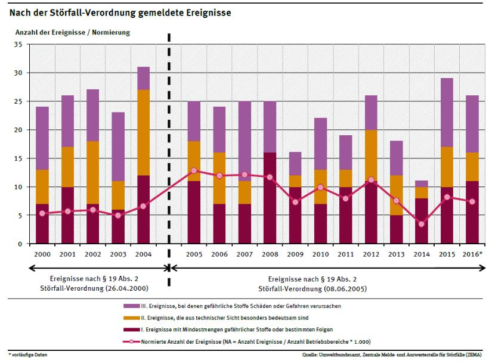

<!DOCTYPE html>
<html>
    <head>
        <meta charset="UTF-8">
        <title>09 Szenarien: CBRN</title>
        
    </head>
    <body>
        
        <div class="article-part article-title"><span class="approved-insertion" data-user="20" data-username="ptinnemann" data-date="26318280">09 Szenarien: CBRN</span></div><div class="article-part article-heading article-subtitle" data-hidden="true"></div><div class="article-part article-contributors article-authors" data-hidden="true"></div><div class="article-part article-richtext article-abstract" data-hidden="true"></div><div class="article-part article-tags article-keywords" data-hidden="true"></div><div class="article-part article-richtext article-body"><h1 id="H1294546"><span class="approved-insertion" data-user="33" data-username="SasseJ" data-date="26318290">9.1 Biologische Gefahren</span></h1><h2 id="H4830969"><span class="approved-insertion" data-user="33" data-username="SasseJ" data-date="26318300">1. </span>Risikobewertung</h2><p><span class="approved-insertion" data-user="33" data-username="SasseJ" data-date="26318350">Für </span><span class="approved-insertion" data-user="33" data-username="SasseJ" data-date="26318400">die Gefähr</span><span class="approved-insertion" data-user="30" data-username="MoellerI" data-date="26319400">d</span><span class="approved-insertion" data-user="33" data-username="SasseJ" data-date="26318400">ungsb</span><span class="approved-insertion" data-user="33" data-username="SasseJ" data-date="26318350">ewertung</span><span class="approved-insertion" data-user="33" data-username="SasseJ" data-date="26318390"> in einer akuten Lage</span><span class="approved-insertion" data-user="33" data-username="SasseJ" data-date="26318350"> ist es hilfreich, das </span><span class="approved-insertion" data-user="33" data-username="SasseJ" data-date="26318300">biologische</span><span class="approved-insertion" data-user="30" data-username="MoellerI" data-date="26319400"> </span><span class="approved-insertion" data-user="33" data-username="SasseJ" data-date="26318300">Agen</span><span class="approved-insertion" data-user="33" data-username="SasseJ" data-date="26318360">s, das zum Ausbruchsgeschehen führt, so schnell wie möglich zu identifizieren. Die existierenden Schnellteste sind insbesondere bei Umweltproben </span><span class="approved-insertion" data-user="33" data-username="SasseJ" data-date="26319410">hierbei </span><span class="approved-insertion" data-user="33" data-username="SasseJ" data-date="26318360">nur bedingt zuverlässig und können sowohl zu falsch positiven als auch zu falsch negativen Ergebnissen führen. Eine Analytik in einem erfahrenen Labor ist daher in jedem Fall für eine Risikobewertung notwendig. </span></p><p><span class="approved-insertion" data-user="33" data-username="SasseJ" data-date="26318360">Auch wenn die überwiegende Anzahl</span><span class="approved-insertion" data-user="33" data-username="SasseJ" data-date="26318390"> der Ausbruchsgeschehen eine natürliche Ursache hat, ist bei der Risikobewertung die Möglichkeit einer absichtlichen Ausbringung zu be</span><span class="approved-insertion" data-user="33" data-username="SasseJ" data-date="26319410">denken. </span><span class="approved-insertion" data-user="33" data-username="SasseJ" data-date="26318360"> </span></p><p><span class="approved-insertion" data-user="33" data-username="SasseJ" data-date="26318360">Darüberhinaus sind folgende Kritien einzubeziehen: </span></p><ul><li><p><span class="approved-insertion" data-user="33" data-username="SasseJ" data-date="26318360">Infektionswege </span></p></li><li><p><span class="approved-insertion" data-user="33" data-username="SasseJ" data-date="26318360">Infektionsroute </span></p></li><li><p><span class="approved-insertion" data-user="33" data-username="SasseJ" data-date="26318360"> Behandlungsoptionen</span></p></li><li><p><span class="approved-insertion" data-user="33" data-username="SasseJ" data-date="26318390">Verfügbare Schutzmaßnahmen</span></p></li></ul><p><span class="approved-insertion" data-user="33" data-username="SasseJ" data-date="26318390">Für eine Risiko</span><span class="approved-insertion" data-user="33" data-username="SasseJ" data-date="26318400">analyse</span><span class="approved-insertion" data-user="33" data-username="SasseJ" data-date="26318390"> im Vorfeld einer Lage, bietet sich </span><span class="approved-insertion" data-user="33" data-username="SasseJ" data-date="26318400">beispielsweise eine </span><a href="https://www.bbk.bund.de/SharedDocs/Downloads/BBK/DE/Downloads/Krisenmanagement/matrix_abb.html" title="https://www.bbk.bund.de/SharedDocs/Downloads/BBK/DE/Downloads/Krisenmanagement/matrix_abb.html"><span class="approved-insertion" data-user="33" data-username="SasseJ" data-date="26318400">Matrix aus Schadensausmaß und Eintrittswahrscheinlichkeit</span></a><span class="approved-insertion" data-user="33" data-username="SasseJ" data-date="26318400"> an. </span></p><p></p><h1 id="H8894627">2. Szenarienspezifische Kommunikation</h1><p><span class="approved-insertion" data-user="33" data-username="SasseJ" data-date="26318400">Insbesonder</span><span class="approved-insertion" data-user="33" data-username="SasseJ" data-date="26318410">e zu Beginn einer biologischen Lage muss davon ausgegangen werden, dass nicht bekannt ist, um welches Agens es sich handelt. Auch diese Unsicherheit muss kommuniziert werden - welche Tatsachen bekannt sind, welche vermutet werden und zu welchen weitere Untersuchungen laufen. </span></p><p><span class="approved-insertion" data-user="33" data-username="SasseJ" data-date="26318400">Ein besonderes Augenmerk bei der Kommunikation von Infektionskrankheiten besteht darin, dass der Nachbar / Mitmensch plötzlich als Bedrohung wahrgenommen wird. Daher kommt der Information über Ansteckungswege und die Schutzmaßnahmen eine hohe Bedeutung zu.  </span><span class="approved-insertion" data-user="33" data-username="SasseJ" data-date="26318410">Bei einem abzusehenden Mangel von Schutzmitteln ist zudem damit zu rechnen, dass eine Priorisierung vorgenommen werden muss. Diese muss sehr sorgfältig abgewogen und klar kommuniziert werden - möglichst auch schon im Vorfeld einer Krise. In "Ruhezeiten" ist es für fast alle nachvollziehbar, dass in einer medizinischen Krise das medizinische Personal, dass sich um die Erkrankten kümmern soll, bevorzugt Prophylaxe bekommen muss. </span></p><h1 id="H5420604">3. Alarmierung, Meldewege</h1><p><span class="approved-insertion" data-user="30" data-username="MoellerI" data-date="26319400">Nach Infektionsschutzgesetz</span><span class="approved-insertion" data-user="30" data-username="MoellerI" data-date="26319410"> (IfSG)</span><span class="approved-insertion" data-user="30" data-username="MoellerI" data-date="26319400"> besteht eine unverzügliche Meldepflicht für Ärzte, Leiter von Einrichtungen und Laboren an das zuständige Gesundheitsamt. Die Gesundheitsämter haben eine unverzügliche Übermittlungspflicht an die oberste Landesgesundheitsbehörde, diese wiederum übermittelt an das RKI. Voraussetzung dafür </span><span class="approved-insertion" data-user="30" data-username="MoellerI" data-date="26319410">ist eine 24/7 Erreichbarkeit. Nach § 16 IfSG stellt das Gesundheitsamt unverzüglich Ermittlungen an zur Herkunft des Erregers, zu Kontaktpersonen und legt Maßnahmen zur Verhinderung der Ausbreitung fest (Tätigkeits-/ Besuchsverbote, Beobachtung, häusliche Isolierung; Absonderung in einem entsprechenden Krankenhaus - z. B. Sonderisolierstation gemäß § 30 (6) IfSG....). </span></p><p><span class="approved-insertion" data-user="30" data-username="MoellerI" data-date="26319410">Mit der behandelnden Einrichtung , der Pressestelle und der obersten Landesbehörde ist gemeinsam festzulegen, wie und wann die Öffentlichkeit zu informieren ist. Dafür ist eine zeitnahe Pressekonferenz einzuberufen. Vorher sind Verantwortlichkeiten festzulegen: wer leitet die Pressekonferenz, wer sagt was zu welchem Thema.</span></p><h1 id="H9336856">4. Führungsorganisation</h1><h1 id="H1542866">5. Akteure und Aufgaben</h1><p><span class="approved-insertion" data-user="33" data-username="SasseJ" data-date="26319410">Bei Biologischen Lagen ist in erster Linie das Gesundheitsamt zuständig. </span><span class="approved-insertion" data-user="30" data-username="MoellerI" data-date="26319410">Das Gesundheitsamt hat </span><span class="approved-insertion" data-user="30" data-username="MoellerI" data-date="26319420">intern im Vorfeld einen Krisenstab zu etablieren, der im Ereignisfall einberufen wird und sofort die Arbeit aufnehmen kann.</span></p><p><span class="approved-insertion" data-user="30" data-username="MoellerI" data-date="26319420">Patienten mit virusbedingtem haemorrhagischem Fieber, </span><span class="approved-insertion" data-user="30" data-username="MoellerI" data-date="26319430">Lungenp</span><span class="approved-insertion" data-user="30" data-username="MoellerI" data-date="26319420">est, </span><span class="approved-insertion" data-user="30" data-username="MoellerI" data-date="26319430">Lungenmilzbrand und Pocken</span><span class="approved-insertion" data-user="30" data-username="MoellerI" data-date="26319420"> hat eine Absonderung in einer geeigneten Einrichtung (gemäß § 30, Abs 6) zu erfolgen.In diesem Fall ist ein Krisenstab einzuberufen und die entsprechende Lage und Aufgaben zu besprechen. Dieser Krisenstab besteht aus dem Leiter des Gesundheitsamtes, einem Vertreter der Sonderisolierstation, der obersten Landesgesundheitsbehörde, der Polizeidirektion, der Landesdirektion (Laborkapazität bis L3), dem Rettungsdienst (Infektions-RTW mit Desinfektionsstützpunkt)</span><span class="approved-insertion" data-user="30" data-username="MoellerI" data-date="26319430">.</span></p><p><span class="approved-insertion" data-user="30" data-username="MoellerI" data-date="26319430">Die Aufgaben dieses Krisenstabes sind:</span></p><p><span class="approved-insertion" data-user="30" data-username="MoellerI" data-date="26319430">- Ermittlung von Kontaktpersoen, Festlegen von antiepidemischen Maßnahmen nach IfSG</span><span class="approved-insertion" data-user="30" data-username="MoellerI" data-date="26319440">, Kategorisierung von Kontaktpersonen</span></p><p><span class="approved-insertion" data-user="30" data-username="MoellerI" data-date="26319430">- Organisation und Überwachung des Patienten- und Probentransports</span></p><p><span class="approved-insertion" data-user="30" data-username="MoellerI" data-date="26319430">- Gewährleistung der Sicherheit (Bewachung, Begleitung von Transporten)</span></p><p><span class="approved-insertion" data-user="30" data-username="MoellerI" data-date="26319430">- Wahrnehmung der Informations- und Beratungsaufgaben für andere Behörden, Einrichtungen und für die Bevölkerung</span></p><p><span class="approved-insertion" data-user="30" data-username="MoellerI" data-date="26319430">- Festlegen und Überwachen von Absonderungen und </span><span class="approved-insertion" data-user="30" data-username="MoellerI" data-date="26319440">Desinfektionsmaßnahmen</span></p><p><span class="approved-insertion" data-user="30" data-username="MoellerI" data-date="26319440">- Amtsärztliche Veranlassung der Absonderung, sowie ggf. der Leichenschau, Beurkundung eines Sterbefalles, Überwachung des Leichentransports und der Kremierung</span></p><p><span class="approved-insertion" data-user="30" data-username="MoellerI" data-date="26319440">- Organisation und Durchführung der Pressearbeit</span></p><p><span class="approved-insertion" data-user="30" data-username="MoellerI" data-date="26319440">- Krisenkommunikation und Risikobewertung, ggf. Hotline einrichten</span></p><p><span class="approved-insertion" data-user="30" data-username="MoellerI" data-date="26319440">- Dokumentation und Evaluierung</span></p><p><span class="approved-insertion" data-user="33" data-username="SasseJ" data-date="26319450">Weitere Akteure: </span></p><ul><li><p><span class="approved-insertion" data-user="33" data-username="SasseJ" data-date="26319460">der </span><strong><span class="approved-insertion" data-user="33" data-username="SasseJ" data-date="26319460">st</span></strong><span class="approved-insertion" data-user="33" data-username="SasseJ" data-date="26319460">ändige </span><strong><span class="approved-insertion" data-user="33" data-username="SasseJ" data-date="26319460">A</span></strong><span class="approved-insertion" data-user="33" data-username="SasseJ" data-date="26319460">rbeitskreis der </span><strong><span class="approved-insertion" data-user="33" data-username="SasseJ" data-date="26319460">Ko</span></strong><span class="approved-insertion" data-user="33" data-username="SasseJ" data-date="26319460">mpetenz- und </span><strong><span class="approved-insertion" data-user="33" data-username="SasseJ" data-date="26319460">B</span></strong><span class="approved-insertion" data-user="33" data-username="SasseJ" data-date="26319460">ehandlungszentren (</span><a href="https://www.rki.de/DE/Content/Kommissionen/Stakob/Stakob_node.html" title="https://www.rki.de/DE/Content/Kommissionen/Stakob/Stakob_node.html"><span class="approved-insertion" data-user="33" data-username="SasseJ" data-date="26319460">STAKOB</span></a><span class="approved-insertion" data-user="33" data-username="SasseJ" data-date="26319460">) ist </span>ein bundesweites Expertennetzwerk<span class="approved-insertion" data-user="33" data-username="SasseJ" data-date="26319460"> f</span>ür das Management und die Versorgung von Patienten mit Krankheiten durch hochpathogene Erreger.<span class="approved-insertion" data-user="33" data-username="SasseJ" data-date="26319460"> Die Kompetenzzentren</span> <span class="approved-insertion" data-user="33" data-username="SasseJ" data-date="26319460">verfügen</span> <span class="approved-insertion" data-user="33" data-username="SasseJ" data-date="26319460">über</span> die spezielle Expertise im <span class="approved-insertion" data-user="33" data-username="SasseJ" data-date="26319460">Bereich des </span>öffentlichen Gesundheitsdienst<span class="approved-insertion" data-user="33" data-username="SasseJ" data-date="26319460">es, während die Behandlungszentren auf die klinische Versorgung in Sonderisolierstationen zur Behandlung von Patienten mit hochpathogenen, lebensbedrohlichen Krankungen spezialisiert sind. Auch zur telefonischen Beratung kann der STAKOB kontaktiert werden. </span></p></li></ul><p><span class="approved-insertion" data-user="33" data-username="SasseJ" data-date="26319410">Bei dem Verdacht auf einen Bioterroristischen Anschlag sind weitere Akteure beteiligt: </span></p><ul><li><p><span class="approved-insertion" data-user="33" data-username="SasseJ" data-date="26319410">die Polizei, um abzuklären, ob es sich um einen begründeten Verdacht handelt. Sie wird entsprechend eine Ernsthaftigkeitsprüfung durchführen. Sollte diese positiv ausfallen, sind weitere Maßnahmen notwendig</span><span class="approved-insertion" data-user="33" data-username="SasseJ" data-date="26319420">, wie z.B. der Ausschluß von Sprengstoffen</span><span class="approved-insertion" data-user="33" data-username="SasseJ" data-date="26319410">.  </span><span class="approved-insertion" data-user="33" data-username="SasseJ" data-date="26319420">Auf die</span><span class="approved-insertion" data-user="33" data-username="SasseJ" data-date="26319410"> Polizei kommt </span><span class="approved-insertion" data-user="33" data-username="SasseJ" data-date="26319420">im weiteren Verlauf </span><span class="approved-insertion" data-user="33" data-username="SasseJ" data-date="26319410">die Ermittlung der Täter zu, sowie die Absperrung des Tatortes. </span></p></li><li><p><span class="approved-insertion" data-user="33" data-username="SasseJ" data-date="26319410">die Feuerwehr im Rahmen der Gefahrenabwehr, um eine weitere Ausbreitung der biologischen Agenzien zu verhindern. </span><span class="approved-insertion" data-user="33" data-username="SasseJ" data-date="26319420">Die Feuerwehr übernimmt auch häufig in Amthilfe für den Amtsarzt die Probenahme. </span></p></li><li><p><span class="approved-insertion" data-user="33" data-username="SasseJ" data-date="26319420">die </span><a href="https://www.bbk.bund.de/DE/AufgabenundAusstattung/CBRNSchutz/ATF/ATF_node.html" title="https://www.bbk.bund.de/DE/AufgabenundAusstattung/CBRNSchutz/ATF/ATF_node.html"><span class="approved-insertion" data-user="33" data-username="SasseJ" data-date="26319420">Analytische Task Force</span></a><span class="approved-insertion" data-user="33" data-username="SasseJ" data-date="26319420"> (ATF) ist vom Bundesamt für Bevölkerungsschutz und Katastrophen</span><span class="approved-insertion" data-user="33" data-username="SasseJ" data-date="26319430">hilfe</span><span class="approved-insertion" data-user="33" data-username="SasseJ" data-date="26319420"> mit spezieller Messtechnik ausgestattet</span><span class="approved-insertion" data-user="33" data-username="SasseJ" data-date="26319430"> worden. Sie ist an 10 Standorten in Deutschland und kann daher innerhalb von maximal 3 Stunden an jedem Ort, zu dem sie gerufen wird, tätig werden. Bei einem Pulverfund vorzugsweise, um eine Freimessung von chemischen und radionuklearen Stoffen vorzunehmen.  </span></p></li></ul><p></p><h1 id="H1950994">6. Ressourcen</h1><h1 id="H7873667">7. Maßnahmen</h1><p><span class="approved-insertion" data-user="33" data-username="SasseJ" data-date="26319440">Infektionsgeschehen</span></p><p></p><p><span class="approved-insertion" data-user="33" data-username="SasseJ" data-date="26319440">Bioterroristischer Verdachtsfall</span></p><p>Einen Überblick über das Vorgehen <span class="approved-insertion" data-user="33" data-username="SasseJ" data-date="26319430">und die erforderlichen Maßnahmen </span>bei einem "<a href="https://www.rki.de/DE/Content/Infekt/Biosicherheit/Poststellen/Pulverfund.pdf;jsessionid=80B696E7B87BC17E8E482A0986D109CB.1_cid372?__blob=publicationFile" title="https://www.rki.de/DE/Content/Infekt/Biosicherheit/Poststellen/Pulverfund.pdf;jsessionid=80B696E7B87BC17E8E482A0986D109CB.1_cid372?__blob=publicationFile">Pulverfund</a>", der den Hauptteil der bioterroristischen Verdachtslagen darstellt, aus Sicht des Gesundheitsamtes, wird auf der Seite des Robert Koch-Instituts zur Verfügung gestellt.  </p><p><span class="approved-insertion" data-user="33" data-username="SasseJ" data-date="26319440">Im Vorfeld ist es sinnvoll, das Vorgehen mit Polizei und Feuerwehr abzustimmen, damit die Zuständigkeiten eindeutig geklärt sind. Das Gesundheitsamt sollte darüberhinaus Verpackungsmaterial für den Gefahrguttransport nach </span><a href="https://www.rki.de/DE/Content/Infekt/Biosicherheit/Probentransport/Probentransport_node.html" title="https://www.rki.de/DE/Content/Infekt/Biosicherheit/Probentransport/Probentransport_node.html"><span class="approved-insertion" data-user="33" data-username="SasseJ" data-date="26319440">ADR</span></a><span class="approved-insertion" data-user="33" data-username="SasseJ" data-date="26319440"> bereithalten sowie Labore identifizieren, die Umwelproben analysieren können. </span></p><p><span class="approved-insertion" data-user="33" data-username="SasseJ" data-date="26319450">Zum </span><a href="https://edoc.rki.de/bitstream/handle/176904/6251/MEBBI-Handbuch.pdf?sequence=1&amp;isAllowed=y" title="https://edoc.rki.de/bitstream/handle/176904/6251/MEBBI-Handbuch.pdf?sequence=1&amp;isAllowed=y">Management biologisch<span class="approved-insertion" data-user="33" data-username="SasseJ" data-date="26319450"> </span>kontaminierter Anschlagsorte</a><span class="approved-insertion" data-user="33" data-username="SasseJ" data-date="26319450"> wurden gemeinsam von RKI und LKA Berlin Handlungshinweise zum gemeinsamen Vorgehen der Polizei und des öffentlichen Gesundheitsdienstes bei bioterroristischen Anschlägen veröffentlicht. Mitarbeiter des öffentlichen Gesundheitsdienstes können sich das Handbuch kostenfrei bestellen. Die Aufgabe des ÖGD in einer solchen Lage ist vorzugsweise die Umsetzung der s</span>euchenhygienische<span class="approved-insertion" data-user="33" data-username="SasseJ" data-date="26319450">n</span> Maßnahmen<span class="approved-insertion" data-user="33" data-username="SasseJ" data-date="26319450">, hierzu gehören:</span></p><ul><li><p><span class="approved-insertion" data-user="33" data-username="SasseJ" data-date="26319450"> </span>Lagebeurteilung aus Sicht ÖGD</p></li><li><p><span class="approved-insertion" data-user="33" data-username="SasseJ" data-date="26319450">Veranlassung von </span>Sofortmaßnahmen </p></li><li><p>Umgang mit Personen im Rotbereich</p></li><li><p>Umgang mit Tatverdächtigen<span class="approved-insertion" data-user="33" data-username="SasseJ" data-date="26319450"> aus Infektionsschutzsicht</span></p></li><li><p>Infektionstransport</p></li><li><p><span class="approved-insertion" data-user="33" data-username="SasseJ" data-date="26319450">ggf. U</span>mgang mit Leichen</p></li><li><p>Epidemiologische Ermittlung<span class="approved-insertion" data-user="33" data-username="SasseJ" data-date="26319450"> </span></p></li></ul><p><span class="approved-insertion" data-user="33" data-username="SasseJ" data-date="26319450">Platzhalter für Text ohne Aufzählung </span></p><p></p><h1 id="H2995339">8. Logistik + Koordination</h1><p></p><h1 id="H8463211"><span class="approved-insertion" data-user="33" data-username="SasseJ" data-date="26318290">9.</span><span class="approved-insertion" data-user="33" data-username="SasseJ" data-date="26318300">2 Chemische</span><span class="approved-insertion" data-user="33" data-username="SasseJ" data-date="26318290"> </span><span class="approved-insertion" data-user="34" data-username="SteulK" data-date="26318320">(</span><span class="approved-insertion" data-user="34" data-username="SteulK" data-date="26318300">und radionukleare</span><span class="approved-insertion" data-user="34" data-username="SteulK" data-date="26318320">)</span><span class="approved-insertion" data-user="34" data-username="SteulK" data-date="26318300"> </span><span class="approved-insertion" data-user="33" data-username="SasseJ" data-date="26318290">Gefahren</span></h1><p>Schadensereignisse unterscheiden sich nicht nur durch den Auslöser (Naturereignisse, menschliches Versagen, Terrorismus), sondern auch durch den Vektor, der die Gefährdung für die Bevölkerung darstellt (Strahlung, chemische Stoffe). Neben den Industrie- oder Transportunfällen mit chemischen Stoffen und Unfällen mit der Freisetzung von radioaktivem Material (Strahlenunfälle) sind auch Naturkatastrophen wie Überschwemmungen und Erdbeben sowie terroristische Angriffe in diesem Zusammenhang denkbar. Eine Kategorisierung von Schadensereignissen etwa in Bezug auf die mögliche Gefährdung für die Bevölkerung (Todesfälle, gesundheitliche Beeinträchtigungen) ist schwierig, denn teilweise fehlen zuverlässige epidemiologische Erhebungen oder sie unterscheiden sich erheblich. Es werden im folgenden Ereignisse mit den Vektoren chemische Agenzien oder Strahlung thematisiert.</p><h2 id="H1379170"><span class="approved-insertion" data-user="34" data-username="SteulK" data-date="26318370">Begriffsbestimmung und spezielle rechtliche Grundlagen</span></h2><p>Im Zusammenhang mit der Freisetzung von chemischen Gefahrstoffen ist der Begriff "<strong>Störfall</strong>" zu definieren. Laut Störfall-Verordnung ist es „ein Ereignis, das … zu einer ernsten Gefahr oder zu Sachschäden … führt“ <span class="citation">(“12. Verordnung zur Durchführung des Bundes-Immissionsschutzgesetzes,” 2017)</span>; ein <em>Ereignis</em> ist eine „Störung des bestimmungsgemäßen Betriebs in einem Betriebsbereich unter Beteiligung eines oder mehrerer gefährlicher Stoffe“ <span class="citation">(“12. Verordnung zur Durchführung des Bundes-Immissionsschutzgesetzes,” 2017)</span>.</p><p>Diese Definitionen folgen der sogenannten <strong>Störfallverordnung</strong> (oder 12.BImSchV, 12. Verordnung zur Durchführung des Bundes-Immissionsschutzgesetzes)<span class="approved-insertion" data-user="34" data-username="SteulK" data-date="26319420"> <span class="citation">(“12. Verordnung zur Durchführung des Bundes-Immissionsschutzgesetzes,” 2017)</span></span>. Geregelt werden hier unter anderem Begrifflichkeiten und Anwendungsgebiete, Betreiberpflichten, Informationspflichten, Alarm- und Gefahrenabwehrpläne sowie die Überwachung. Die potentielle Gefährlichkeit einzelner Stoffe wird in einer Stoffliste erfasst mit ihrer jeweiligen Gefahrenkategorie und sogenannten Mengenschwellen (in kg). Die Mengenschwellen kennzeichnen durch die Höchstmengen eines Stoffes, der anwesend ist oder vorhanden sein könnte, den jeweiligen Betriebsbereich und daher die anzuwendenden Vorschriften. Es wird unterschieden zwischen Betriebsbereichen der unteren (niedrigere Gefahr) und der oberen Klasse (höhere Gefahr) je nachdem, wieviel eines gefährlichen Stoffes anwesend ist oder sein könnte.</p><p>Die Definition „ernste Gefahr“ bezieht sich auf eine Gefahr, bei der das Leben von Menschen bedroht wird bzw. schwere Gesundheitsfolgen zu erwarten sind, oder die Umwelt geschädigt wird. Es werden Kriterien beschrieben, nach denen das Ereignis entsprechend einer „ernsten Gefahr“ einzustufen ist. Das gleiche gilt für die Definition der entstehenden Sachschäden. Auch hier werden Kriterien aufgestellt, nach denen das Ereignis als Störfall gewertet wird und also der zuständigen Behörde mitgeteilt werden muss<span class="approved-insertion" data-user="34" data-username="SteulK" data-date="26318390"> <span class="citation">(“12. Verordnung zur Durchführung des Bundes-Immissionsschutzgesetzes,” 2017)</span></span>.</p><p>Der Betreiber eines Betriebsbereichs hat der zuständigen Behörde unverzüglich den Eintritt eines Ereignisses, das die Kriterien der Störfall-Verordnung erfüllt, mitzuteilen. Spätestens innerhalb einer Woche nach Eintritt eines Ereignisses muss eine ergänzende schriftliche Mitteilung vorlegt werden. Welche Behörde zuständig ist, <span class="approved-insertion" data-user="34" data-username="SteulK" data-date="26318390">ist abhängig vom</span> Bundesland. In den Bevölkerungs-reichen Bundesländern (Hessen, Baden-Württemberg, Nordrhein-Westfalen) werden die Aufsichtspflichten meist von den Mittelbehörden (Regierungspräsidien, Bezirksregierung) erfüllt. In Hessen und Baden-Württemberg sind die Regierungspräsidien Kassel, Gießen und Darmstadt bzw. Stuttgart, Karlsruhe, Freiburg und Tübingen zuständig. In Nordrhein-Westfalen sind die Bezirksregierungen die zuständige Mittelbehörde. In Bayern (ebenfalls ein Bevölkerungs-reiches Bundesland) sind die Kreisverwaltungsbehörden zuständig.<span class="approved-insertion" data-user="34" data-username="SteulK" data-date="26319420"> </span><span class="approved-insertion" data-user="34" data-username="SteulK" data-date="26319430">In diesem Zusammenhang muss darauf hingewiesen werden, dass die untere Gesundheitsbehörde (Gesundheitsämter)</span><span class="approved-insertion" data-user="34" data-username="SteulK" data-date="26319440"> nicht die primäre Überwachungsbehörde für Störfall-relevante Anlagen sind. Eine Zuständigkeit ergibt sich dennoch durch die Aufgabe "gesundheitliche Gefahren von der Bevölkerung abzuwenden"</span><span class="approved-insertion" data-user="34" data-username="SteulK" data-date="26319450"> festgelegt in den Länder-Gesetzen über den öffentlichen Gesundheitsdienst <span class="citation">(“HgöGD,” 2007)</span>. </span><span class="approved-insertion" data-user="34" data-username="SteulK" data-date="26319460">Zusätzlich ist bei Stoffaustritten oder zumindest der Möglichkeit eines Stoffaustrittes, der nicht unmittelbar im Zusammenhang mit einer entsprechenden Anlage steht, eine Zuständigkeit der unteren Gesundheitsbehörde gegeben.</span></p><p>Erhält die zuständige Behörde <span class="approved-insertion" data-user="34" data-username="SteulK" data-date="26319460">(in diesem Fall die Mittelbehörde) </span>Kenntnis von einem Ereignis (Störfall), hat sie:</p><ol><li><p>durch Inspektionen, Untersuchungen oder andere geeignete Mittel die für eine vollständige Analyse der technischen, organisatorischen und managementspezifischen Gesichtspunkte dieses Ereignisses erforderlichen Informationen einzuholen,</p></li><li><p>geeignete Maßnahmen zu ergreifen, um sicherzustellen, dass der Betreiber alle erforderlichen Maßnahmen zur Abhilfe trifft, und</p></li><li><p>Empfehlungen zu künftigen Verhinderungsmaßnahmen abzugeben, sobald die Analyse nach Nummer 1 vorliegt.</p></li></ol><p>Die zuständige Behörde muss die Meldung (über die nach Landesrecht zuständige Behörde) letztlich dem Bundesministerium für Umwelt, Naturschutz und Reaktorsicherheit mitteilen (Siehe <span class="approved-insertion" data-user="34" data-username="SteulK" data-date="26319480">Figure</span> 1).</p><figure data-equation="" data-image="79" data-figure-category="figure" data-caption=" Informationspflicht des Betreibers nach Störfallverordnung (Quelle: Umweltbundesamt)" id="F22139711" data-aligned="center" data-width="100" class="aligned-center image-width-100" data-image-src="/media/images/28938dea-8830-4fbe-9016-cc4ceb9d69a2.jpg"><div></div><figcaption><span class="figure-cat-figure">Figure</span><span data-caption=" Informationspflicht des Betreibers nach Störfallverordnung (Quelle: Umweltbundesamt)"> Informationspflicht des Betreibers nach Störfallverordnung (Quelle: Umweltbundesamt)</span></figcaption></figure><p>Der Betreiber ist ferner laut Störfallverordnung dazu verpflichtet dieses, bereits vor Beginn der Errichtung eines Betriebsbereiches oder vor einer störfallrelevanten Änderung der zuständigen Behörde anzuzeigen. Diese Anzeige umfasst auch ein schriftliches Konzept zur Vermeidung von Störfällen.</p><p>Der Betreiber eines Betriebsbereiches der oberen Klasse muss außerdem einen Sicherheitsbericht in fünf-jährigem Abstand vorlegen, in dem unter anderem adäquate Wartungsmaßnahmen dargelegt werden und mögliche Störfallszenarien und ihre Begrenzung diskutiert werden. Die internen Alarm- und Gefahrenabwehrpläne müssen für einen Betriebsbereich der oberen Klasse alle drei Jahre überarbeitet werden. Die Störfallverordnung beinhaltet auch die Definitions-gemäße Abgrenzung zu Betriebsstörungen ( gemäß Anhang VI, Teil 1, II und III <span class="approved-insertion" data-user="34" data-username="SteulK" data-date="26319520"><span class="citation">(“12. Verordnung zur Durchführung des Bundes-Immissionsschutzgesetzes,” 2017)</span></span>).<br></p><p>Die systematische Erfassung und Auswertung der Ereignisse ist eine wichtige Grundlage, um zum Beispiel Notfallpläne weiterzuentwickeln. Im Jahr 1993 hat die <strong>Zentrale Melde- und Auswertestelle für Störfälle und Störungen (ZEMA) </strong>im Umweltbundesamt ihre Arbeit aufgenommen <span class="approved-insertion" data-user="34" data-username="SteulK" data-date="26319520"><span class="citation">(“ZEMA - Anlagensicherheit,” 2018)</span></span>. Durch die ZEMA werden alle nach der Störfall-Verordnung meldepflichtigen Ereignisse erfasst, ausgewertet und in einer Datenbank sowie Jahresberichten veröffentlicht. Abbildung 2 zeigt einen Überblick der gemeldeten Störfälle und anderweitigen Betriebsstörungen seit 2000. In den Jahren 2000 und 2005 kam es zu einer Änderung der Störfall Kriterien in der jeweiligen Version, daher ändert sich an diesem Punkt der Bewertungsmaßstab.</p><figure data-equation="" data-image="80" data-figure-category="figure" data-caption="Nach der Störfall-Verordnunhg gemeldete Ereignisse 1991-2016 (UBA, ZEMA 2018)" id="F13710091" data-aligned="center" data-width="100" class="aligned-center image-width-100" data-image-src="/media/images/59322e2a-5d43-4699-91c7-0c2fe80d36f9.jpg"><div></div><figcaption><span class="figure-cat-figure">Figure</span><span data-caption="Nach der Störfall-Verordnunhg gemeldete Ereignisse 1991-2016 (UBA, ZEMA 2018)">Nach der Störfall-Verordnunhg gemeldete Ereignisse 1991-2016 (UBA, ZEMA 2018)</span></figcaption></figure><p>Die ZEMA gibt in regelmäßigen Abständen eine zusammenfassende Bewertung der Ereignisse (Störfälle, Betriebsstörung) eines Jahres heraus. Zusätzlich werden Anzahl, Gründe für einen Störfall, Ereignisart sowie Betriebsvorgang, bei der der Störfall eingetreten ist, und die Stoffkategorie analysiert. Im Jahresbericht 2012-2014 erfolgt gleichzeitig auch die Darstellung der Ereignisse 1993-2014 [4]. So sieht man, dass die Mehrheit der Ereignisse im chemischen Prozess selbst oder in der Lagerung stattfanden und nicht bei etwa Transport, Wartung oder Reparatur. Dieses gilt sowohl für den gesamten Zeitraum, in dem Daten vorliegen (1993-2014), als auch für die jüngsten Daten 2012-2014 (Abbildung 3).</p><p><br></p><p><br></p><p><strong>Abbildung 3 Betriebsvorgänge mit Ereignissen (gemeldete Ereignisse 2012 bis 2014 und im Durchschnitt der letzten 22 Jahre) (Quelle: Fendler et al. 2016 </strong><strong>[4]</strong><strong>)</strong></p><p><br></p><p><br></p><p>In Bezug auf die Primärursachen zeigt sich im Durchschnitt der Jahre 1993-2014 der häufigste Fehleranteil bei „technischen Fehlern (Apparate/Armaturen)“ (19,6%). Zweit- und dritthäufigste Fehlerquelle sind chemische Reaktion (13,5%) und menschlicher Bedienfehler (11,6%). Seltener sind Korrosion (6,6%), menschlicher Fehler (organisatorisch) (6,5%), menschlicher Fehler (Reparaturarbeiten) (6,1%) und technischer Fehler (Behälter/Flansch) (4,7%). System-/Managementfehler, Bedienfehler (gegen Vorschrift) oderumgebungsbedingte Ursache liegen jeweils unter 3%. In 7,8 bzw. 7,5% der Fälle war die Ursache nicht aufklärbar bzw. die Ursachensuche wird aktuell noch fortgeführt [4].</p><p><br></p><p>Die Störfallverordnung orientiert sich inhaltlich an entsprechenden EU Richtlinien. So orientiert sich die Störfallverordnung der aktuellen Fassung an der <strong>EU Richtlinie</strong> 2012/18 [5]. Diese EU Richtlinie wird umgangssprachlich auch als <strong>Seveso III Richtlinie</strong> bezeichnet. Diese umgangssprachliche Bezeichnung geht zurück auf einen Chemieunfall in Norditalien im Jahr 1976. Bei diesem wurde eine unbekannte Menge des hochgiftigen Dioxins in die Umwelt abgegeben. Es erkrankten in der Folge über 200 Menschen an Chlorakne. Mehr als 1.800 Hektar Land wurde auf Jahre kontaminiert (2.1 Austritt von chemischen Stoffen, S.27). Um auf solcherlei Situationen reagieren zu können, verabschiedete die Europäische Gemeinschaft 1982 die Richtlinie 82/501/EWG. Diese wurde bezeichnet als Seveso Direktive (oder Richtlinie). In diesem Falle übrigens orientierte sich die EU Richtlinie eng an der deutschen Störfallverordnung, die bereits zwei Jahre zuvor (1980) in Kraft trat. Unter anderem als Reaktion auf das „Bhopal Unglück“ in Indien 1984 trat 1996 die Seveso II Richtlinie in Kraft (Richtlinie 96/82/EG „zur Beherrschung der Gefahren bei schweren Unfällen mit gefährlichen Stoffen“). Diese wurde noch einmal geändert 2003 und zuletzt ersetzt durch die Seveso III Richtlinie. Wie die national gültige Störfall Verordnung hat auch die EU Richtlinie die Verhütung schwerer Betriebsunfälle mit gefährlichen Stoffen und die Begrenzung der Unfallfolgen zum Ziel.</p><p><br></p><p>Der Umgang mit Zwischenfällen radioaktive Materialien betreffend richtet sich nach dem neu beschlossenen Strahlenschutzgesetz und der aktuellen Strahlenschutzverordnung. Das <em>Gesetz zur Neuordnung des Rechts zum Schutz vor der schädlichen Wirkung ionisierender Strahlung</em> [6], das am 1. Oktober 2017 in Kraft getreten ist, geht auf eine EU-Richtlinie zurück und fasst Vorgaben aus der <a href="http://www.bfs.de/SharedDocs/Glossareintraege/DE/S/strahlenschutzverordnung.html?view=renderHelp">Strahlenschutzverordnung</a>, der <a href="http://www.bfs.de/SharedDocs/Glossareintraege/DE/R/roentgenverordnung.html?view=renderHelp">Röntgenverordnung</a> und dem zuvor geltenden Strahlenschutzvorsorgegesetz zusammen. Das „neue“ Strahlenschutzgesetz und die zugrundeliegende EU-Richtlinie gehen unter anderem auch auf die Reaktorkatastrophe von Fukushima zurück und die Notwendigkeit auf solche Situationen bestmöglich zu reagieren. Das neue Strahlenschutzgesetz sieht abgestimmte Notfallpläne zwischen Bund und Ländern vor, die auf sogenannten Referenzszenarien basieren. Diese decken sowohl Kernkraftwerksunfälle als auch Ereignisse mit eher regionalen Auswirkungen ab, etwa Transportunfälle. Vorgesehen ist darüber hinaus die Einrichtung eines radiologischen Lagezentrums, das vom Bundesministerium für Umwelt, Naturschutz, Bau und Reaktorsicherheit eingerichtet und für dessen operationelle Umsetzung das Bundesamt für Strahlenschutz in wesentlichen Teilen zuständig sein wird. Im Notfall soll dieses Lagezentrum eine deutschlandweit gültige Lagebewertung vornehmen, die zum einen die aktuelle Situation und die vermutete künftige Entwicklung beschreibt und zum anderen Empfehlungen für Schutzmaßnahmen vorschlägt. Das neu beschlossene Strahlenschutzgesetz orientiert sich an der EU-Richtlinie 59 von 2013 [7].</p><p>Die aktuelle <strong>Strahlenschutzverordnung</strong> in der Fassung vom 27.01.2017 beinhaltet darüber hinaus noch Angaben über die maximal zulässige Strahlungsdosis (in Millisievert), die bei einem Störfall erreicht werden darf [8].</p><p><br></p><p><br></p><p>Im Folgenden werden Schadensfälle mit Relevanz für die Umwelt und ihr Management diskutiert. Im rechtlichen Sinn orientieren sich diese Ereignisse national an der Störfallverordnung bzw. am Strahlenschutzgesetz und der Strahlenschutzverordnung. Im Sinne der Bedrohung für die Bevölkerung und des Katastrophenschutzes sind auch das <strong>„Zivilschutz- und Katastrophenhilfegesetz“ des Bundes</strong> [9] sowie die <strong>„Brand- und Katastrophenschutzgesetze“ der Länder</strong> relevant für einen Schadensfall.</p><p>Der Schutz der Zivilbevölkerung im Verteidigungsfall liegt nach Grundgesetze (Art. 73) in der Gesetzgebungskompetenz des Bundes und ist somit Bundessache. Hingegen ist für den Katastrophenschutz im Frieden (also z.B. bei Störfällen) und die allgemeine Gefahrenabwehr diese Befugnis den Ländern zugeordnet (Art. 70). Eine enge Zusammenarbeit von Bund und Ländern ist erstrebenswert in der Art, dass der friedensmäßige Katastrophenschutz auch im Verteidigungsfall Aufgaben zum Schutz der Bevölkerung wahrnehmen soll. Umgekehrt steht der durch den Bund finanzierte Zivilschutz den Ländern zusätzlich für die Gefahrenabwehr (im Frieden) zur Verfügung. Exemplarisch soll hier auf die hessische Gesetzgebung („Hessisches Gesetz über den Brandschutz, die Allgemeine Hilfe und den Katastrophenschutz“, [10]) eingegangen werden. Im hessischen Brand- und Katastrophenschutzgesetzes (Fassung von Januar 2014) wird eingegangen auf Aufgabe und Organisation des Brandschutzes und der allgemeinen Hilfe. Dieses beinhaltet die Unterhaltung der Feuerwehr, Organisation und Zuständigkeiten der Einsatzleitung und des Brandschutzes sowie entsprechende Kostenfragen. In einem zweiten Teil wird eingegangen auf die Organisation des zivilen Katastrophenschutzes. Der Begriff der „Katastrophe“ wird definiert als Ereignis, das Leben, Gesundheit oder die lebensnotwendige Versorgung der Bevölkerung, Tiere, erhebliche Sachwerte oder die natürlichen Lebensgrundlagen … so gefährdet oder beeinträchtigt, dass … der Einsatz von Einheiten … des Katastrophenschutzes erforderlich sind“ [10]. Als Katastrophenschutzbehörde werden Landrat/-rätin oder OberbürgermeisterIn (untere Katastrophenschutzbehörde), die Regierungspräsidien (obere Katastrophenschutzbehörde) sowie das zuständige Ministerium (oberste Katastrophenschutzbehörde) benannt. Auf Grundlage dieser Gesetzgebung ist der öffentliche Gesundheitsdienst der jeweiligen Ämter an der Organisation des Katastrophenschutzes beteiligt (Gesundheitsamt einer Stadt oder Gemeinde für die jeweilige Landrat/-rätin oder OberbürgermeisterIn). Aufgabe ist in der Vorbereitung die Errichtung eines Katastrophenschutzstabes und entsprechender Infrastruktur, Katastrophenschutzpläne, Katastrophenschutzübungen etc. Unter anderem müssen Maßnahmen des sogenannten ABC-Schutzes bedacht werden (z.B. eine ABC-Messzentrale). Der <strong>ABC-Schutz</strong> ist der Aufgabenbereich im Katastrophenschutz zur Abwehr atomarer, biologischer und chemischer Gefahren sowie zur Dekontamination von Menschen und Sachen bei Großschadensereignissen oder Katastrophen. Auch die Informationspflicht obliegt im Schadensfall der unteren Katastrophenschutzbehörde. Diese stellt „Eintritt und Ende des Katastrophenfalles fest … und macht dies durch Rundfunk, Fernsehen, Tageszeitungen oder auf andere Weise bekannt“ [10].</p><p>Das Zusammenspiel mehrerer Akteure auf verschiedenen Ebenen und die Komplexität der Rechtslage (Bund- und Länderrecht) muss beim Störfallmanagement ausreichend bedacht werden mit dem Ziel, die Bevölkerung bestmöglich vor den Gefahren eines Störfalles bzw. eines Schadensfalles zu schützen.</p><h2 id="H9452593"><span class="approved-insertion" data-user="34" data-username="SteulK" data-date="26319360">Abläufe</span><span class="approved-insertion" data-user="34" data-username="SteulK" data-date="26319480"> und Organisationsstrukturen</span></h2><p>Seit der Mitte des 20. Jahrhunderts spielt die chemische Industrie weltweit als Wirtschaftsfaktor eine starke Rolle [11]. Laut einem Bericht der WHO waren im Jahr 2009 15 Millionen chemische Substanzen kommerziell erhältlich, 60 000 -70 000 Substanzen sind dauerhaft im Einsatz und zwischen 200 bis 1 000 Chemieprodukte werden jährlich in einer Menge von mehr als einer Tonne Gewicht produziert [11]. Schätzungen der WHO zufolge starben im Zeitraum 1970 bis 1998 ca. 13 000 Menschen infolge eines Chemieunfalls. 100 000 wurden verletzt oder erkrankten und mehr als 3 Millionen Menschen mussten evakuiert werden [11]. Diese Zahlen veranschaulichen die Notwendigkeit eines adäquaten Störfall-Managements.</p><p>Insbesondere auch durch die bekannten Schadensfälle wie dem Sevesounglück in Italien 1976 und der Katastrophe von Bhopal (Indien) 1984 etablierten sich in der Folge gesetzliche Rahmenbedingungen und Pläne zum Management von Störfällen. International gibt die WHO (zuletzt in der Fassung von 2009) einen Leitfaden zur Erarbeitung von Plänen zum Störfallmanagement heraus („<em>Manual for the Public Health Management of Chemical Incidents</em>“, [11]). Im englischen Sprachgebrauch haben sich die Begriffe <em>Incident</em> (Vorfall, Ereignis) und <em>Disaster</em> (Unfall, Katastrophe) durchgesetzt. <em>Incident</em> wird laut WHO Definition benutzt für ein Ereignis, bei dem Personen potentiell einer Gefahr ausgesetzt sind mit sofortigem oder verspätetem Risiko für die Gesundheit und die zu öffentlicher Aufmerksamkeit führt [11]. <em>Disaster</em> wird verwendet für ein Ereignis, bei dem eine große Anzahl von Personen einer Gefahr ausgesetzt werden mit dem Risiko von Verletzungen und Todesfällen oft in Kombination mit der Zerstörung von Eigentum oder Existenzgrundlagen [11]. Entsprechend dieser Definition der WHO wird international der Begriff (Incident oder) Disaster Management gebraucht.</p><p><br></p><p>Grundvoraussetzung für die Planung eines effektiven Störfallmanagements sind Kenntnis und Verständnis von Unfallmechanismen, Störfall Szenarien und dem theoretischen Kreislauf des Störfallmanagements (<em>Disaster Management Cycle</em>). Diese werden im Folgenden erörtert.</p><h3 id="H8392736">Unfallmechanismen (Injury mechanisms)</h3><p>Die WHO spricht von vier Mechanismen im Zusammenhang mit Schäden durch (chemische) Störfälle: Feuer, Explosion, Toxizität und Erfahrung des traumatischen Ereignisses [11].</p><p><br></p><ul><li><p>Ein <strong>Feuer</strong> ist in der Lage durch Hitze Verletzungen hervorzurufen, oder es setzt toxische Substanzen frei. Jedes größere Feuer muss als Störfall/Incident betrachtet werden, da Verbrennungsprodukte freigesetzt werden. Des Weiteren kann eine Explosion als sekundärer Effekt eines Feuers zustande kommen.</p></li><li><p>Eine <strong>Explosion</strong> ist in der Lage traumatische Verletzungen hervorzurufen und zwar durch die sogenannte Schockwelle oder durch umherfliegende Teile. Als sekundärer Effekt kann eine Explosion zu Feuer oder Stoffaustritt führen.</p></li><li><p>Mit dem Begriff <strong>Toxizität</strong> beschreibt man die Wirkung des freigesetzten Stoffes. Der jeweilige Stoff kann auf sehr vielfältige Weise Toxizität aufweisen: akute Schädigungen, Neurotoxizität (Nerven-Schädigung), Kanzerogenität (Krebs-fördernde Effekte).</p></li><li><p>Schließlich müssen auch <strong>psychische Effekte</strong> eines Schadensereignisses durch die Erfahrung des traumatischen Ereignisses bedacht werden. Der Vektor des Schadens ist hier nicht die Exposition zu der chemischen Substanz oder zu Feuer bzw. Explosion, sondern das Ereignis an sich. Schadensereignisse wie die im weiteren besprochenen haben das Potential die Opfer nachhaltig zu belasten beispielsweise durch den Verlust von Angehörigen, Lebensgrundlage (Arbeitsplatz, Eigentum) oder durch Angst (-störungen). Hier muss auch an psychische Störungen gedacht werden wie Depressionen, post-traumatische Belastungsstörungen, Panikattacken etc. [11]. Häufig wird bei der Einschätzung von Schadensereignissen und ihrem Follow-up eher die Toxizität der chemischen Substanz in den Fokus gestellt. Die (psychischen) Schäden durch das Ereignis selbst gilt es ebenfalls zu überwachen.</p></li></ul><h3 id="H9374036">Störfall Szenarien (Incident Scenarios)</h3><p>Ein wirkungsvolles Störfallmanagement wird sich immer auch an der Manifestation des Ereignisses orientieren. Die Szenarien unterscheiden sich nicht nur durch das auslösende Ereignis (Brand etc.), sondern auch durch den (zeitlichen) Verlauf. Im Folgenden werden sieben Situationen als beispielhafte Szenarios besprochen. Im Fokus stehen hier Stofffreisetzungen außerhalb von Gebäuden, da diese eher dem Begriff <em>Disaster</em> (große Anzahl von Personen) entsprechen und daher eher zu einem entsprechenden Disaster Management führen [11].</p><p><br></p><ol><li><p><strong>Plötzliche Freisetzung von Gas oder Dampf</strong></p></li></ol><p>Durch Verdunsten oder Abdampfen aus einer flüssigen Lösung wird akut Gas oder Dampf freigesetzt. Eine Exposition der Anwohner entlang der Windrichtung ist möglich. Direkt am Austrittsort ist auch der direkte Hautkontakt denkbar. Häufig werden Geruchsschwaden, Probleme der Atmungsorgane oder Augenirritationen frühzeitig gemeldet. Abhängig von der chemischen Substanz können Folgen Stunden bis Tage verzögert sein.</p><p>Wichtig ist die unmittelbare Information an Anwohner sich in ihren Häusern aufzuhalten und nicht zu lüften. Zur Alarmierung der Bevölkerung können Alarmsirenen hilfreich sein. Zur Information eignen sich Kanäle wie Radio, Fernsehen etc. Bei zu erwartender Änderung der Windrichtung sollte die Evakuierung der Bevölkerung in Betracht gezogen werden. Nach dem Vorüberzeihen der toxischen Wolke gibt es meist keine Restriktionen in Bezug auf Aktivitäten draußen.</p><p>Beispiel: Methylisocyanat, Bhopal, 1984 (Siehe 2.1.3)</p><ol start="2"><li><p><strong>Plötzliche Freisetzung eines Aerosols</strong></p></li></ol><p>Es erfolgt die plötzliche Freisetzung eines Flüssig- oder Fest-Aerosols. Dieses hat die Eigenschaft sich an Böden und sonstigen Oberflächen abzulagern. Es muss entweder durch Reinigungsmaßnahmen oder durch natürliche Mechanismen wie Regen beseitigt werden. Die Exposition durch Inhalation ist meist unmittelbar nach dem Ereignis gegeben. Des Weiteren ist die Exposition durch orale oder dermale Aufnahme möglich und zwar so lange bis die Substanz beseitigt wurde oder durch Regen ausgewaschen. In Gegenden mit Agrarbau ist daher mit einer erhöhten Gefahr durch kontaminierte Lebensmittel zu rechen. Kinder sind häufiger durch Exposition betroffen, da sie sich mehr draußen aufhalten und durch höhere Frequenz von Hand-Mund Kontakten oral mehr kontaminierten Partikel/Staub aufnehmen.</p><p>Wichtig ist auch hier die sofortige Information an die Bevölkerung mit Hinweis den Außenbereich zu meiden. Reinigungsmaßnahmen sind wichtig und die Information an die Bevölkerung, wie lange der Außenbereich und kontaminierte Böden etc. zu meiden sind. Bei sichtbaren Verunreinigungen ist die Compliance in der Bevölkerung meist hoch. Auch auf die Langzeitwirkungen (z.B. bei karzinogenen Substanzen) muss geachtet werden.</p><p>Beispiel: Dioxin, Seveso, Italien, 1976 (Siehe 2.1.2)</p><ol start="3"><li><p><strong>Plötzliche Kontamination anderer Kontaktmedien</strong></p></li></ol><p>Wenn andere Kontaktmedien von einer Verunreinigung betroffen sind wie z.B. Wasser oder Boden Kontamination oder es zu einer Beimengung bei der Lebensmittelherstellung gekommen ist, ist der Zeitpunkt des Erkennens der Verunreinigung entscheidend. Bei sofortigem Erkennen kann der Kontakt zu Menschen (Verzehr etc.) leichter vermieden werden als bei luftgetragener Kontamination. Es muss auch an die sekundäre Kontamination durch den Verzehr von z.B. Fisch oder Agrarprodukte gedacht werden. Anders als bei der luftgetragenen Kontamination ist die Reaktion auf ein solches Ereignis nicht eine Sache der ersten Minuten. In Bezug auf die Möglichkeiten der Exposition für den Menschen müssen auch die chemischen Eigenschaften der Substanz bedacht werden, z.B. der Dampfdruck oder die Wasserlöslichkeit.</p><p>Beispiel: Benzol, Songhua Fluß, China, 2005 (Siehe 2.1.5)</p><ol start="4"><li><p><strong>Großes Feuer</strong></p></li></ol><p>Wie bereits erwähnt muss ein großes Feuer immer auch als Störfall bzw. als umwelt-relevantes Schadensereignis betrachtet werden, da durch den Verbrennungsprozess Verbrennungsprodukte in die Umwelt abgegeben werden. Die Art des verbrennenden Gebäudes, Inventar und Lagerprodukte geben Hinweise auf die freigesetzten Materialien. Das initiale Risiko ist stark abhängig von der Rauchentwicklung, den Verbrennungsprodukten und wird natürlich auch bestimmt durch die Verbrennungskraft des Feuers an sich. Unmittelbar während des Ereignisses ist eine Risikoabschätzung meist nicht möglich. Dir freigesetzten Materialien können Kontaminationen wie bei Typ 2 verursachen. Des Weiteren muss an die Möglichkeit einer Explosion gedacht werden. Wegen der Eigenschaften des Rauches kann die Evakuierung der betroffenen Bevölkerung teilweise über mehrere Tage notwendig sein.</p><p>Beispiel: Brand des Buncefield Öl Depot, England, 2005 (Siehe 2.1.5)</p><ol start="5"><li><p><strong>Explosion</strong></p></li></ol><p>Explosionen führen in allererster Linie zu Zerstörung und zu Verletzung durch umherfliegende Teile. Der Einschluss von Personen in kollabierte Gebäude ist möglich. Die Toxizität erfolgt durch Ascheprodukte von sekundären Feuern oder durch ausgetretenes Material auf Böden und anderweitigen Oberflächen. In der Bewältigung der Situation spielt die Instabilität von Gebäuden durch die Explosion eine Rolle. Personen, die ihre Wohnung verloren haben, müssen langfristig unterstützt werden.</p><p>Beispiel: Explosion und Feuer, PEMEX Flüssiggas Anlage, Mexico, 1984 (Siehe 2.1.5)</p><ol start="6"><li><p><strong>Ausbruch von Symptomen</strong></p></li></ol><p>In diesem Fall wird nicht das Ereignis selbst erkannt, sondern es zeigen sich ähnliche Symptombilder in einer Bevölkerungsgruppe. Erkannt werden diese durch öffentliche Surveillance Systeme oder durch die aufmerksame Ärzteschaft. Es ist denkbar, dass der Grund für das Auftreten der Erkrankungen lange unbekannt bleibt. Initial werden häufig Infektionserkrankungen angenommen. Insbesondere in Entwicklungsländern kann das Eingreifen internationaler Hilfssysteme notwendig sein. Auch bioterroristische Attacken und Symptome der Massenhysterie müssen differentialdiagnostisch ins Auge gefasst werden. In der Reaktion auf eine solche Situation spielt das Ausfindig-machen der auslösenden Substanz eine entscheidende Rolle. Die Zusammenarbeit von Infektiologen und umweltmedizinischen Experten ist hilfreich.</p><p>Beispiel: Endosulfan Vergiftung, Jabalpur, Indien, 2002; Bromid Vergiftungen, Angola, 2007; Minamata Bucht, Japan, 50er Jahre (Siehe 2.1.1)</p><ol start="7"><li><p><strong>Stille Freisetzungen</strong></p></li></ol><p>Im Falle einer stillen Freisetzung eines Stoffes in ein Medium wurde die Freisetzung zunächst nicht bemerkt, oder es wurden keine Maßnahmen ergriffen. Die Freisetzung fällt jedoch auf, bevor erste Symptome auftauchen. Dies kann zum Beispiel sein, wenn die Freisetzung eines Stoffes während des Ereignisses als geringer angesehen wurde. Der Umgang mit den Szenarien 6 und 7 ist oft diffus in Bezug auf den zeitlichen Ablauf, die Örtlichkeit und die beteiligten Personen. Es muss ein Augenmerk auf Langzeitfolgen des jeweiligen Stoffes gelegt werden. Die Abgrenzung zu anders vermittelten Erkrankungen ist schwierig, da die Exposition oft nicht eindeutig nachweisbar ist.<br></p><h3 id="H4630970">Kreislauf des Störfall Managements (Disaster Management Cycle)</h3><p>Das Prinzip des Disaster Management Cycle ist es darzustellen, an welchen unterschiedlichen Stellen öffentlicher Gesundheitsdienst, Industrie und andere beteiligte Stellen in einen Schadensfall eingreifen [11].</p><p><br></p><p><br></p><p><br></p><p><strong>Abbildung 4 Disaster Management Cycle (Quelle: WHO 2009 </strong><strong>[11]</strong><strong>)</strong></p><p><br></p><p>In erster Linie muss es darauf ankommen, umwelt-relevante Schadensereignisse zu vermeiden. Ziel der <strong>Vermeidung (Prevention)</strong> ist es also, das Risiko zu reduzieren, dass ein entsprechendes Ereignis eintritt. Denkbar ist hier zum Beispiel gefährliche oder leicht-entflammbare Substanzen durch andere auszutauschen oder auf diese zu verzichten. Ein Ansatz kann die Standortsuche eines Chemie-verarbeitenden Betriebes sein: eine entsprechende Distanz zwischen Betrieb und Anwohner reduziert das Risiko von Personenschäden.</p><p>Das Thema <strong>Vorbereitung</strong> (Preparedness oder <strong>Preparation) </strong>beschäftigt sich mit der Erarbeitung von Notfallplänen, Training der Einsatzkräfte (und auch der Anwohner) und zum Beispiel mit der Planung eines adäquaten Warnhinweissystems (z.B. <em>Dark Pages</em>).</p><p><strong>Erkennen und Alarmieren</strong> (<strong>Detection und Alert) </strong>beinhaltet entsprechende Systeme die Stoffaustritte frühzeitig erkennen und Alarmsysteme, die unmittelbare Mitteilungen an die Bevölkerung geben (Sirenen). Des Weiteren gehören hierzu auch Regelungen zur Alarmierung der Einsatzkräfte und anderer betroffener Einrichtungen (Behörden, interne Kräfte).</p><p>Die eigentliche <strong>Reaktion</strong> auf ein Ereignis <strong>(Response)</strong> umfasst die Maßnahmen, die zur Beendigung des Stoffaustritts durchgeführt werden oder zur Linderung/Behebung der Gesundheitsbeeinträchtigungen.</p><p>Die Stufe <strong>Nachbereitung (Recovery) </strong>im Kreislauf des Störfalls befasst sich mit allen Maßnahmen, die nach dem Austritt und der unmittelbaren Versorgung von Verletzten stattfindet: Gesundheits-Surveillance, Aufräummaßnahmen und Ursachensuche. An diesem Punkt schließt sich der Kreislauf zur Prevention. Denn hier ist der Anknüpfungspunkt, um durch sorgfältige Schadensanalyse, erneute Störfälle zu vermeiden.</p><p>Planungen zum Störfall Management orientieren sich häufig entlang dieses Kreislaufes, also anhand der Themen Prevention, Preparedness, Detection and alert, Response und Recovery, so dass nun auf diese Stufen eingehender eingegangen wird. Die Betrachtung erfolgt anhand einer Stellungnahme der WHO von 2009 [11].</p><p>Der öffentliche Gesundheitsdienst, aus dessen Sicht diese Betrachtung erfolgt, hat in jeder Stufe des Kreislaufes Verantwortungen zu übernehmen. Die Beurteilung des Risikos (Risk assessment) und die Kommunikation mit der Bevölkerung sind Kernaufgaben des öffentlichen Gesundheitsdienstes. Im Hinblick darauf ist in jeder Stufe des (Störfall Management) Kreislaufs eine Einschätzung zu treffen. Auch darauf wird im Folgenden genauer eingegangen werden.</p><h3 id="H6339559">Vermeidung (Prevention)</h3><p>Mit der Thematik der Unfall Vermeidung sind hauptsächlich Chemiker und Ingenieure der Industrie befasst. In technischem Hinblick geht es z.B. um Fehlerraten einzelner Bestandteile einer Fertigungsanlage und um entsprechende Schutzmaßnahmen. Gesetzgeber und Behörden sind involviert in der Standortsuche, durch die Zulassung der Anlagen und in manchen Fällen auch in der Planung der Transportrouten. Für den öffentlichen Gesundheitsdienst gilt es, <strong>mögliche Unfallszenarien</strong> wahrzunehmen und eine Risikobewertung durchzuführen. Teilweise besteht auch die Notwendigkeit zur Risikokommunikation.</p><p>In diesem Zusammenhang ist die Kenntnis des Konzeptes sogenannter Schutzmaßnahmen (engl. <em><strong>Lines of defence (LOD)</strong></em> oder <em><strong>Layers of protection (LOPs)</strong></em>) von Vorteil [11]. Im Allgemeinen unterscheidet man zwei Formen der Schutzmaßnahmen/Schutzzonen (LOPs): solche, die der Vermeidung eines Störfalles dienen (<em>Prevention LOPs</em>), oder solche, die die Konsequenzen eines Stoffaustrittes mindern (<em>Mitigation LOPs</em>). Die <em>Prevention LOPs</em> (zur Vermeidung eines Störfalles) sind zum Beispiel bauliche Maßnahmen, die dazu führen, dass denkbare Unfälle nicht passieren (Zäune, Abtrennungen etc.). Auch Kontrollmaßnahmen durch Arbeiter sind <em>Prevention LOPs</em>, wenn sie in vorgegebener Prozedur Kontrollen der Unversehrtheit von z.B. Schläuchen durchführen (sogenannte <em>Standard operating procedures, SOPs</em>). Mitigation LOPs sind z.B. Überlaufventile, die im Falle eines Stoffaustrittes reagieren und Stoffe in andere Container ableiten oder Feuerlöschsysteme [11]. Die Analyse von LOPs bzw. ihre Festsetzung gibt auch Hinweise auf mögliche Unfallszenarien: wieviel eines Stoffes kann in welcher Zeit entweichen? Welche Stoffe sind relevant?</p><p>Auch Untersuchungen stattgehabter Unfallszenarien (sowohl im eigenen Bereich als auch international) können hilfreich sein bei der Erstellung möglicher Unfallszenarien.</p><p>Die Analyse möglicher Unfallszenarien findet Berücksichtigung bei der räumlichen Planung (<em>Land-use planning</em>) eines Werkes. Hier muss die umgebende Besiedelung, vulnerable Bevölkerungsgruppen, die Möglichkeit von Naturkatastrophen und ähnliches miteinbezogen werden. Sie müssen auch bedacht werden bei der Festlegung von Bauauflagen, bei der Abnahme vor Inbetriebnahme und bei den Sicherheitsauflagen durch die jeweils zuständigen Behörden.</p><p>Auf die Thematik der Risikokommunikation wird im Weiteren noch eingegangen werden (1.2.7 Reaktion (Response)).</p><p><br></p><h3 id="H1791905">Vorbereitung (Preparedness)</h3><p>Zur Einschätzung eines Schadensereignisses ist das Vorliegen entsprechender <strong>Informationsdienste</strong> hilfreich. Dazu gehört Kenntnis der Stoffeigenschaften des ausgetretenen Stoffes. Dafür gibt es national und international verschiedene Publikationen und Datenbanken [12]. Die WHO empfiehlt in ihrem <em>Manual for the Public Health Management of Chemical Incidents</em> sogenannte <em>National Hazardous Sites Databases</em> also <strong>Datenbanken</strong> der nationalen Gefahrenbereiche [11]. Diese sollen wenigstens die Örtlichkeit, Art und Menge der verwendeten Stoffe und Kontaktpersonen umfassen. In Deutschland existiert seit 1993 auch die Zentrale Melde- und Auswertestelle für Störfälle und Störungen (ZEMA) am Umweltbundesamt. Das Installieren und Betreiben solcher Datenbanken dient dem Ziel, im Schadensfall unverzüglich die notwendigen Informationen verfügbar zu haben.</p><p><br></p><p>In den Bereich <em>Preparedness</em> also Vorbereitung gehört auch die Erarbeitung von sogenannten <strong>Notfallschutzplänen</strong> (<em>Response plans</em>). Diese Pläne werden häufig analog zu den möglichen Störfallszenarien erarbeitet: Plötzliche Freisetzung von Gas oder Dampf, plötzliche Freisetzung eines Aerosols, plötzliche Kontamination anderer Kontaktmedien, großes Feuer, Explosion, Ausbruch von Symptomen und stille Freisetzungen. Lokale Pläne sollen integriert werden in die allgemein bestehenden Sicherheitspläne für Naturkatastrophen und Terrorattacken.</p><p>Die Response Plans sollen laut WHO auch folgende Punkte umfassen [11]:</p><p><br></p><ul><li><p>Zuständigkeiten und Kompetenzen aller Institutionen, die an einem Störfall-Szenario beteiligt sind. Hierbei müssen auch Hierachie- und Kommunikation-Ebenen Berücksichtigung finden.</p></li><li><p>Vereinbarung, welche Organisation im Schadensfall für z.B. Laborproben finanziell aufkommt?</p></li><li><p>Definition, unter welchen Voraussetzungen nationale Hilfefonds abgerufen werden sollen</p></li><li><p>Informationen darüber, wie die Öffentlichkeit über das Ereignis informiert werden soll</p></li><li><p>Geeignete Mechanismen, um eine wenigstens einmal jährliche Evaluation des Response Plans zu gewährleisten</p></li></ul><p><br></p><p>In Bezug auf die absichtliche Freisetzung von Stoffen (Terroranschlag) müssen noch andere Gesichtspunkte ins Auge gefasst werden, z.B. die Sicherstellung der Nahrungsmittelsicherheit, Bereitstellung von kritischer Medikation, das Miteinbeziehen von Organen der nationalen Sicherheit (Bundeswehr, Kriminalpolizei) etc. In diesem Fall sind auch Informationen über die Art der Bedrohung meist nicht sicher zu eruieren. Als Beispiel sei hier genannt die Freisetzung von Sarin-Gas in der Tokyo´er U-Bahn im Jahr 1995, bei der 12 Personen zu Tode kam [11].</p><p><br></p><p>Insbesondere der öffentliche Gesundheitsdienst ist an der Stelle der Vorbereitung/<em>Preparedness</em> auf einen Störfall mit der <strong>Expositions- bzw. Risikoabschätzung</strong> involviert. Diese Maßnahme ist in der Vorbereitungsphase eines Störfalles ähnlich der in der Reaktionsphase (<em>Response</em>). Es geht darum, Expositionswege durch den im Rahmen des Störfalles freigesetzten Stoff im Hinblick auf die Exposition der Bevölkerung zu beurteilen (siehe ). In sieht man beispielhaft die möglichen Expositionswege der Bevölkerung. Nach der Beurteilung der möglichen Exposition der Bevölkerung muss eine gesonderte Risikoabschätzung erfolgen: Ist die Exposition durch einen Stoff ausreichend, um einen gesundheitlichen Schaden zu verursachen? Wie hoch dafür ist das Risiko in der Bevölkerung? In der Phase der Vorbereitung ist die Risikoabschätzung notwendig, um unter anderem die notwendigen Ressourcen (personell und finanziell) abschätzen zu können.</p><p><br></p><p><br></p><p><br></p><p><strong>Abbildung 5 Expositionswege nach Störfall (Quelle: WHO 2009 </strong><strong>[11]</strong><strong>)</strong></p><p></p><p><br></p><p>Im englischen Sprachgebrauch existiert das sogenannte <strong>Incident Command System</strong>, kurz: ICS. Auf Deutsch wird es auch als Ereignis-Koordinations-System bezeichnet. Dieses ist ein Managementsystem für Großeinsätze der Einsatzkräfte (Feuerwehr, Katastrophenschutz, andere Organisationsstrukturen). Dieses System unterscheidet zwischen verschiedenen Führungs- und Funktionsbereichen, z.B. Bereiche Presse, Logistik, Einsatzleitung etc. Des Weiteren wird zwischen mehreren Qualitätsbereichen unterschieden in Abhängigkeit von der Größe und Bedeutsamkeit des Einsatzes (Typen I-V). Die Prinzipien des ICS finden in der Vorbereitungsphase eines Störfalles Anwendung [11].</p><p><br></p><p>Die Beteiligten der Notfallschutzpläne (Response plans): Mitarbeiter der Einsatzkräfte, Werksangestellte etc. sind im Rahmen der <em>Preparedness</em> entsprechend zu schulen. Zu diesem <strong>Training</strong> gehört laut WHO neben Kenntnis der Notfallpläne auch die regelmäßige Simulation einzelner Szenarien und die Evaluation des Lernerfolges durch das Training.</p><p><br></p><p>Auch in der Vorbereitungsphase muss die <strong>Kommunikation</strong> mit der Bevölkerung bedacht werden: Informationsmaterialien, die im akuten Störfall verwendet werden können, insbesondere die <em>Dark Pages</em>. <em>Dark Pages </em>ist ein Begriff für Internet Seiten, die nur in Betrieb genommen werden, wenn ein bestimmtes Ereignis eintritt. Sie Informieren über den jeweiligen Stoffaustritt, Gefährdungspotential und geben Anweisungen für die Bevölkerung. Damit es nicht zu Zeitverzug kommt, werden Sie vorbereitet, aber erst online gestellt, wenn ein bestimmtes Ereignis eintritt.</p><p><br></p><p>Für den Fall des Austritts von gefährlichen oder schädigenden Substanzen (<em>Hazardous and Noxious Substances, HNS</em>) auf See existiert eine spezielle Methodik [13]. Nach einer Definition der internationalen Seeschifffahrts-Organisation (International Maritime Organisation, IMO) werden so alle Stoffe (außer Öl) gehandhabt, die durch unbeabsichtigtes Einbringen auf See Schaden verursachen können. Nach einem vorgegebenen Algorithmus wird aus Toxizität, Stoffeigenschaften und Menge des transportierten Stoffes ein Gesamt-Risikowert berechnet. Diese Methodik wurde im Rahmen des <em>Atlantic Region Pollution Response Program (ARCOPOL</em>) erarbeitet und steht für die Preparedness Planung auf See zur Verfügung.</p><p><br></p><h3 id="H7267212"><strong>Erkennen und Alarmieren (Detection and Alert)</strong></h3><p>Verschiedene Maßnahmen sind zum „Erkennen und Alarmieren“ bei einem Störfall geeignet. Es existieren mehrere Methoden, um den <strong>Austritt chemischer Stoffe</strong> vor Ort zu erkennen. Häufig wird ein Stoffaustritt zuerst durch die Werksangestellten festgestellt bzw. durch die Personen, die die Freisetzung zu verantworten haben. Dieses kann stattfinden in Zusammenhang mit einer Explosion, sichtbaren Stoffaustritten oder Geruchsauffälligkeiten. Um die Meldung von Stoffaustritten durch Unbeteiligte z.B. Anwohner zu beschleunigen, sind 24-Stunden geschaltete Notfalltelefone hilfreich.</p><p>In eine andere Methode, um Störfälle registrieren zu können, ist die Auswertung von<strong>Gesundheitsstatistiken</strong>. Insbesondere bei den Störfallszenarien „Ausbruch von Symptomen“ oder „Stille Freisetzung“ sind Statistiken geeignet Auffälligkeiten darzustellen. Anwendung finden Mortalitätsraten (Häufungen der Sterblichkeit), stationäre Aufnahmedaten, Krebsregisterdaten und Fehlbildungsraten in der Bevölkerung. Als Beispiel sei hier das sogenannte „kongenitale Minamata Syndrom“ genannt [14]. In den 50er Jahren fiel an der japanischen Küste in der Minamata Bucht auf, dass vermehrt Säuglinge gesunder Mütter vorgestellt wurden, die im Alter von ca. 6 Monaten neurologische Symptome (Wachstumsverzögerung, persistierende frühkindliche Reflexe, Bewegungsstörungen) entwickelten. Es dauerte vom Zeitpunkt, da die ersten Säuglinge auffällig wurden, noch mehr als 3 Jahre bis die Ursache feststand: die neurologischen Symptome der Kinder standen in Zusammenhang mit einer Quecksilber Exposition der Mütter in der Schwangerschaft durch eine Fabrik in dieser Bucht. Zum damaligen Zeitpunkt war unbekannt, dass chemische Agenzien den Foetus schädigen können, ohne dass Auffälligkeiten bei der Mutter bestanden hätte. Dieses Ereignis veranschaulicht auch, inwiefern Gesundheits Surveillance geeignet ist, entsprechende Auffälligkeiten frühzeitig zu erkennen [14].</p><p><br></p><p>In bestimmten Störfallszenarien mit fraglicher Exposition der Bevölkerung kann auch ein (standardisiertes)<strong>Umwelt Monitoring</strong> Aufschluss darüber geben, ob Kriterien eines Schadensereignisses/Störfalles erfüllt sind.</p><p>Zu der Phase „Detection and alert“ gehört neben dem Erkennen eines Schadensfalles auch die Alarmierung der Einsatzkräfte und der Fachleute. Da in der akuten Schadenssituation häufig zunächst Einsatzkräfte der Polizei oder Feuerwehr vor Ort sind, denen ggf. die Kenntnis der Betriebsabläufe, der jeweiligen Stoffe etc. fehlen, ist auch die unverzügliche Alarmierung von Fachkräften der Werksleitung oder des öffentlichen Gesundheitsdienstes von Nöten [11].</p><p>Die zu diesem Zweck geschaffenen Kommunikationswege bezeichnet man auch als sog. <em>Alert Channels</em>. Gemeint ist ein strukturiertes Alarmieren auch z.B. der Fachleute des öffentlichen Gesundheitsdienstes.</p><h3 id="H3283244"><br>Reaktion (Response)</h3><p>In der Reaktions-Phase (<em>Response</em> Phase) eines Störfalles müssen mehrere Schritte eingeleitet werden, um wirkungsvoll dem Austritt einer chemischen Substanz zu begegnen [11]:</p><p><br></p><ol><li><p>Beenden des Austritts (der chemischen Substanz), vermeiden, dass sich Substanz ausbreitet, <strong>Exposition reduzieren</strong></p></li><li><p>Einsatzleitung und entsprechende Management Systeme aktivieren</p></li><li><p>Erste <strong>Beurteilung des Schadenspotentials</strong> und Weitergabe der Information an (medizinische) Helfer</p></li><li><p>Öffentlichen Gesundheitsdienst involvieren und frühzeitig beteiligen</p></li><li><p>Evaluation der notwendigen Maßnahmen, um sowohl kurzfristig als auch langfristig die niedrigste mögliche Schadensbilanz zu erhalten</p></li><li><p><strong>Informationen an die Öffentlichkeit</strong> geben</p></li><li><p>Registrieren der Betroffenen und ggf. Probennahme</p></li><li><p>Mit Untersuchungen starten</p></li></ol><p><br></p><p>Zur Begriffsklärung soll hier auf einzelne Schritte näher eingegangen werden:</p><p>In Bezug auf die <strong>Expositionsreduktion </strong>(ad 1), siehe oben)<strong> </strong>der Bevölkerung sind mehrere Maßnahmen denkbar:</p><p>Effektiv eingesetzt werden kann unter anderem <strong>persönliche Schutzbekleidung</strong> (engl. Personal Protective Equipment, PPE) sowohl für Helfer als auch für Anwohner etc. [15].</p><p>In der Durchführung häufig einfacher ist die <strong>„Ausgangssperre“</strong> für Anwohner (engl. Shelter in place, SIP). In Abhängigkeit von der Dichtigkeit des Gebäudes lässt sich so eine deutliche Reduktion der Exposition erreichen. Von Nöten ist hier der Hinweis an die betroffene Bevölkerung drinnen zu bleiben, Fenster und Türen zu schliessen und ggf. den Betrieb von Außenventilationsgeräten (Klimaanlagen etc.) zu vermeiden. In Abhängigkeit von dem Unfallszenarium und der Örtlichkeit können Alarmsirenen diese Notwendigkeit den Anwohner unverzüglich mitteilen. Insbesondere in sehr warmem/Tropischem Klima ist dies häufig nicht sinnvoll, denn die Innenräume lassen sich oft nicht komplett verschließen bzw. haben eine sehr hohe Durchlässigkeit. In manchen Fällen ist dieses Vorgehen nicht zielführend, zum Beispiel wenn der Stoff sich (vielleicht anders als erwartet) nicht gut zerstreut. Dann ist entweder die Versorgung der betroffenen Bevölkerung mit Lebens-notwendigen Lieferungen notwendig oder es muss doch eine Evakuation eingeleitet werden.</p><p><strong>Evakuation</strong> bedeutet in diesem Zusammenhang, die Bevölkerung aus einem kontaminierten Bereich in einen „sicheren“ Bereich zu bringen. Auch dieses Vorgehen birgt Schwierigkeiten. So können bei sehr schnellen Evakuierungsmaßnahmen Verkehrsunfälle zusätzliche Verzögerungen hervorrufen. Es kommt teilweise dazu, dass Kinder verloren gehen oder die medizinische Versorgung für einzelne nicht gewährleistet werden kann. Grundsätzlich muss die Evakuierung eines Gebietes erwogen werden, wenn absehbar ist, dass ein Gebiet erst mit einer gewissen Latenz kontaminiert sein wird. Dass also ausreichend Zeit ist, die Bevölkerung zu evakuieren, bevor das Gebiet kontaminiert sein wird. Des Weiteren muss an eine Evakuierung gedacht werden, wenn davon auszugehen ist, dass die Dauer der Kontamination eines Gebietes zu lang ist, damit eine Ausganssperre eingesetzt werden kann.</p><p>Die genannten Maßnahmen wie persönliche Schutzkleidung, „Ausgangssperre“ und Evakuation sind auch abhängig davon, inwiefern <strong>Dekontaminationsmaßnahmen </strong>in einem Szenario durchgeführt werden können.</p><p><br></p><p>Zur Definition, in welchem räumlichen Bereich, Maßnahmen durchgeführt werden, hat sich vielfach das Konzept von Schutzzonen/Gefahrenbereiche durchgesetzt (<em><strong>Chemical Incident Zoning</strong></em>).</p><p><br></p><p><br></p><p><br></p><p><br></p><p><strong>Abbildung 6 Schutzzonen (Chemical incident zoning) (Quelle: WHO 2009 </strong><strong>[11]</strong><strong>)</strong></p><p><br></p><p><br></p><p>In Bezug auf die <strong>Beurteilung des Schadenspotentials</strong> (ad 3), siehe oben) können die international gebräuchlichen <strong>AEGL Werte</strong> (<em>Acute Exposure Guideline Level</em>) genutzt werden. Sie dienen einmal als Planungswerte für die sicherheitstechnische Auslegung von störfallrelevanten Anlagen. Darüber hinaus helfen sie bei der Einschätzung des Schadenspotentials bei stattgehabtem Störfall [16][17].</p><p>Es existieren AEGL Werte für verschiedene relevante Expositionszeiträume (10 Minuten, 30 Minuten, 1 Stunde, 4 Stunden, 8 Stunden) und für 3 verschiedene Effekt-Schweregrade:</p><ul><li><p>AEGL-1: Schwelle zum spürbaren Unwohlsein;</p></li><li><p>AEGL-2: Schwelle zu schwerwiegenden, lang andauernden oder fluchtbehindernden Wirkungen;</p></li><li><p>AEGL-3: Schwelle zur tödlichen Wirkung.</p></li></ul><p><br></p><p>Für jeden Expositionszeitraum gibt es also drei AEGL Werte in Bezug auf die Schwere, der möglichen Gesundheitsbeeinträchtigungen. In Deutschland wurde 1998 mit der Ableitung von AEGLs begonnen in Anlehnung an die Werte der US-amerikanischen Umweltbehörde (Environmental Protection Agency, EPA) [18]. Veröffentlicht werden die AEGL Werte in sogenannten Technical Support Documents (TSD) spezifisch für einen bestimmten Stoff. In Deutschland werden geltende AEGL Werte vom Umweltbundesamt herausgegeben (und zwar in Anlehnung an die AEGL Werte und Technical Support Documents der amerikanischen Umweltbehörde). Die AEGL Werte werden auch genutzt, um den Einsatz der Hilfskräfte und ihre Dauer zu steuern. Für den Einsatz eines Helfers im kontaminierten Bereich wird dann meist der entsprechende AEGL-2 Wert herangezogen.</p><p>Seit kurzem existieren auch theoretische Konstrukte, um der wahrscheinlichen Exposition in der Bevölkerung ein Schadenspotential zuordnen zu können [19]. Bezeichnet wird dieses Instrument als <em>Flash Environment Assessment Tool (<strong>FEAT</strong></em>). Entwickelt wurde dieses Tool, um im Schadensfall, die wahrscheinliche Exposition in der Bevölkerung und in einem weiteren Schritt das Ausmaß der Bedrohung abschätzen zu können. Es umfasst Tabellen der wichtigsten Schadstoffe mit Informationen ihrer Toxizität und z.B. der Wasserlöslichkeit. Es wurde entwickelt von mehreren nationalen Gesundheitseinrichtungen unter anderem der „Vereinten Nationen“ [19].</p><p><br></p><p>Wie bereits in der Vorbereitungsphase (Preparedness) angesprochen kommt der <strong>Information der Bevölkerung</strong> in der Reaktions-Phase (<em>Response</em>) eine besondere Bedeutung zu.</p><p>Die Öffentlichkeit benötigt folgende Informationen:</p><ul><li><p>Was ist passiert?</p></li><li><p>Wer ist zuständig?</p></li><li><p>Was wurde unternommen, um den Austritt zu stoppen?</p></li><li><p>Wer ist in Gefahr?</p></li><li><p>Was sind mögliche Gefahren?</p></li><li><p>Was kann die Bevölkerung tun, um sich zu schützen?</p></li><li><p>Wo kann man weitere Informationen bekommen?</p></li><li><p>Wann gibt es voraussichtlich die nächsten Informationen?</p></li></ul><p><br></p><p>Die Information der Bevölkerung ist immer ein kritischer Punkt und sollte im optimalen Fall von einer in dieser Aufgabe versierten Person mit guten Kommunikationsfähigkeiten vorgetragen werden. Insbesondere ist es wichtig, die Besorgnis der Bevölkerung ernst zu nehmen. Verschiedene Kommunikationsprinzipien machen anschaulich, wie die Informationen formuliert sein sollten [11]. Beispielhaft können hier die sogenannten STARC Prinzipien genannt werden. Auf diese wird in der Guideline der WHO zum Umgang mit Störfallen von 2009 näher eingegangen. Laut STARC Prinizipien sollte die Darstellung der Ereignisse und der getroffenen Maßnahmen folgendermaßen beschaffen sein:</p><p><br></p><p><strong>S</strong>imple – Einfach</p><p><strong>T</strong>imely – Unverzüglich</p><p><strong>A</strong>ccurate – ohne Umschweife; fokussiert</p><p><strong>R</strong>elevant – auf Rückfragen sollte mit faktischem Wissen reagiert werden</p><p><strong>C</strong>redibility – die informierende Person sollte über ein hohes Maß an Glaubwürdigkeit verfügen</p><p><br></p><p>Es gibt international und national mehrere Leitfäden zur Krisenkommunikation. Herausgegriffen sei hier der Leitfaden Krisenkommunikation des Innenministeriums zuletzt von 2014 [20]. Dieser gibt Begriffsbestimmungen und formuliert ebenfalls Prinzipien einer ziel-führenden Kommunikation: Offenheit, Transparenz, Glaubwürdigkeit, Dialogorientierung. Hier erfolgt auch eine Abgrenzung der Begrifflichkeiten „Risikokommunikation“ und „Krisenkommunikation“. Während sich die Krisenkommunikation an einer konkreten Gefahrensituation orientiert bzw. an einem akut eingetretenem Ereignis, findet die Risikokommunikation Anlass-unabhängig statt. Die Risikokommunikation ist folglich eine Maßnahme der Vorbereitung (Preparedness), die Krisenkommunikation findet statt in der Reaktions-Phase (Response) eines Ereignisses [20].</p><p>Es existieren einige Beispiele für Kommunikationsfehler bei der Information der Bevölkerung [21]. Auf diese wird anhand eines konkreten Beispiels, der Störfallserie in Höchst 1993, noch gesondert eingegangen (siehe Abschnitt 2.1.4).</p><h3 id="H845639"><strong>Nachbereitung (Recovery)</strong></h3><p>In der Phase der Nachbereitung (<em>Recovery</em>) findet neben der <strong>Unterstützung</strong> und Betreuung <strong>möglicher Opfer</strong> insbesondere auch die gezielte Evaluierung des Ereignisses statt [11]. Mehrere Untersuchungsmethoden stehen hier zur Verfügung. Das humane Biomonitoring (HBM) bietet die Möglichkeit die Exposition eventuell betroffener Personen darzustellen. Hier werden Körperflüssigkeiten (Blut, Urin) auf die Anwesenheit des Stoffes oder etwaiger Metabolite untersucht.</p><p>Dieses dient der Klärung der Frage, inwiefern eine Person oder eine Personengruppe gegenüber der Substanz exponiert war bzw. ist. Zu diesem Zweck kann man auch Umweltmedien (Wasser, Boden, Luft) auf Anwesenheit eines Stoffes untersuchen. Auch dieses dient dem Zweck der <strong>Expositionsbestimmung</strong>. Im Zusammenhang mit der Dekontamination von verunreinigten Umweltmedien zur Wiederherstellung der Umwelt ist dies als Erfolgskontrolle sinnvoll.</p><p><br></p><p>Es existieren des Weiteren mehrere Möglichkeiten, gesundheitliche Folgen in <strong>analytischen Studien</strong> darzustellen. Anwendung finden Kohortenstudien, Fall-Kontroll Studien und Querschnittsstudien [22], siehe auch Kapitel III-1.2 Umweltepidemiologie. Bei diesen analytischen Studien geht es darum, das tatsächliche Risiko für gesundheitliche Beeinträchtigungen nach Exposition zu ermitteln. <strong>Kohortenstudien</strong> sind Längsschnittstudien über die Zeit. Individuen werden bezüglich der Exposition, ausgewählt und über die Zeit beobachtet, um in der Auswertung Exponierte mit Nicht-Exponierten bezüglich der Inzidenz von Krankheiten (Inzidenzstudie) oder der auftretenden Todesursachen (Mortalitätsstudie) zu vergleichen. In <strong>Fall-Kontroll-Studien</strong> werden neuerkrankte Personen (inzidente Fälle) mit nicht erkrankten Personen (Kontrollen) bezüglich der Exposition verglichen. <strong>Querschnittstudien </strong>umfassen eine definierte Auswahl von Personen aus der festgelegten Zielpopulation und ermitteln Expositionen und Erkrankungen gleichzeitig zu einem festen Stichtermin.</p><p>Es existieren international zahlreiche Untersuchungen dieser Studientypen, die sich mit den gesundheitlichen Beeinträchtigungen von Arbeitern und Anwohnern nach einem Schadensereignis beschäftigen [23–26]. Im Falle von Strahlenunfällen stehen auch Daten aus Tiermodellen zur Ausprägung und Therapieoptionen des akuten Strahlensyndroms (Acute Radiation Syndrome, ARS) zur Verfügung [27].</p><p><br></p><p>Neben der Analyse des tatsächlichen Schadens muss in der <em><strong>Recovery</strong></em> Phase auch die <strong>Wiederherstellung der Umwelt</strong> seinen Stellenwert haben [11]. Da die Wiederherstellung der Umwelt meist weniger dringlich erscheint als andere Maßnahmen des Störfallmanagements, wird dieses häufig vernachlässigt.</p><p><br></p><p>Die Darstellung des Störfall Managements als Kreislauf veranschaulicht die Wichtigkeit aus den Erkenntnissen der <em><strong>Recovery</strong></em><strong> </strong>Phase Lehren zu ziehen. Zahlreiche Arbeiten beschäftigen sich damit, welche Konsequenzen aus Evaluierungen gezogen werden können [28, 29]? Insbesondere die großen Schadensfälle bieten umfangreiches Datenmaterial in Bezug auf die Risikoanalyse von Arbeitern, Anwohnern oder anderweitig Betroffenen. In Bezug auf die Risikoanalyse für eine Morbiditäts- oder Mortalitätszunahme werden epidemiologische Studien der Bevölkerung genutzt. Auch aus Untersuchungen der Exposition (entweder Messungen der Umweltmedien als auch humanes Biomonitoring) lassen sich Rückschlüsse ziehen mit Relevanz für die Phase der <em><strong>Prevention</strong></em><strong> </strong>oder <em><strong>Preparedness</strong></em> [30].</p><h3 id="H8176219">Ethische Aspekte</h3><p>Mit Blick auf große Schadensereignisse, globale Pandemien, Terrorangriffe oder Naturkatastrophen stellt sich auch die Frage nach ethischen Aspekten in der Entscheidungsfindung, wenn der Bedarf an medizinischer Hilfe die Kapazitäten von Krankenhäusern und Rettungsdiensten übersteigt [31]. In diesem Zusammenhang wurden vielfach Paradigmen aufgestellt, die die Herangehensweise postulieren, „die meisten Menschenleben zu retten“. In einer Notfallsituation wird den Personen mit der größten Behandlungsnotwendigkeit, also denjenigen mit einer lebensbedrohlichen Verletzung oder mit der Gefährdung durch Langzeitfolgen, zuerst eine Behandlung zuteil. Sollten die verfügbaren Ressourcen jedoch nicht effektiv sein, um das Leben zu retten oder die Folge abzuwenden, sollten sie einem anderen Patienten mit höheren Überlebenswahrscheinlichkeiten zu Gute kommen. Je begrenzter die Ressourcen sind, desto stringenter wird die Entscheidung für eine therapeutische Maßnahme gehandhabt werden [31].</p><p>Ethische Probleme, das Konzept „die meisten Menschenleben zu retten“ umzusetzen, erscheinen nachvollziehbar, insbesondere da glücklicherweise in westlichen Industrienationen Entscheidungen dieser Art selten zu treffen sind. Es muss ebenfalls bedacht werden, dass auch in der Schadenssituation zuvor Erkrankte versorgt werden müssen und zwar sowohl therapeutisch als auch palliativ. Auch denen, die keine „Therapie“ erhalten, müssen nach Möglichkeit andere Maßnahmen angeboten werden: Erleichterung der Symptome, Bequemlichkeit, Ansprache. Dieses Konzept wird als <strong>CARE</strong> Konzept bezeichnet: <strong>C</strong>omfort (Bequemlichkeit), <strong>A</strong>ssistance (Unterstützung), <strong>R</strong>elief of Symptoms (Linderung der Symptome), <strong>E</strong>xplanations (Ansprache, Erklärung).</p><p>Drei Kriterien können bei der ethischen Entscheidungsfindung hilfreich sein: die Reihenfolge der Vorstellung, die medizinischen Bedürfnisse des Patienten und die Effektivität der Behandlungsmethode [31]. Es wurde ein Algorithmus entwickelt, der die priorisierte Zuführung eines Patienten zu einer Therapiemaßnahme darstellt (). Kenntnis eines solchen Algorithmus kann in der Phase der Vorbereitung (Preparedness) hilfreich sein, um Abläufe zu planen. In der Reaktion (<em>Response</em>) auf einen Schadensfall erleichtert es die Einordnung einer Therpiemaßnahme.</p><p><br></p><p><br></p><p><br><br></p><p><br><br></p><p><strong>Abbildung 7 Vereinfachter Algorithmus für bevorzugte Behandlung Verletzter [31]</strong></p><p><br></p><h3 id="H5072923"><br><strong>Exkurs epidemiologische/toxikologische Studien</strong></h3><p>In <strong>epidemiologischen Untersuchungen</strong> (der Bevölkerung) wird anstelle der Teratogenität und der Fetotoxität einer Substanz das Risiko eines vorzeitigen Schwangerschaftsabbruchs oder von Geburtsanomalien im allgemeinen sowie die Neugeborenen-Sterblichkeit untersucht [14]. <strong>Toxikologische Studien </strong>an Versuchstieren stellen in der Regel dar, wieviele Tiere bei definierter Exposition (oral, dermal, inhalativ) einen bestimmten adversen Effekt bekommen (Krebs, Tod, Fehlbildung). Es kann eine sogenannte Dosis-Wirkungsbeziehung erstellt werden [32]. Diese zeigt an, wieviel Prozent der Tiere bei einer vorgegebenen Dosis (Exposition) den jeweiligen Effekt haben.</p><p>In epidemiologischen Untersuchungen wird untersucht, wie häufig ein adverser Effekt in einer Bevölkerungsgruppe eintritt, die wahrscheinlich eine bestimmte Exposition hatte.</p><h3 id="H6119092">Gesundheitliche Wirkung /toxische Effekte</h3><p>Bei der gesundheitlichen Beurteilung von Schadensereignissen muss unterschieden werden zwischen akuter und chronischer Toxizität sowie zwischen Sofortwirkung und Langzeitfolgen einer toxischen Substanz. An diesem Punkt ausgeklammert werden die zu Beginn besprochenen Verletzungsmechanismen Feuer, Explosion und psychische Belastung (siehe Abschnitt 1.2.1 Unfallmechanismen (Injury mechanisms).</p><p>Hier geht es um die Wirkung einer toxischen Substanz. Die <strong>Toxikologie</strong> beschreibt unerwünschte bis tödliche Wirkungen von Substanzen auf Gewebe, Organe, Organsysteme und Organismen [32]). Die Wirkung resultiert immer aus der Schädigung einzelner Zellen. Im Mittelpunkt steht häufig der Zelltod (Apoptose). Zellen sind jedoch in der Lage mit kontrollierten Reaktionen auf die Schädigung zu antworten und die Konsequenz der Schädigung zu beeinflussen. So erklärt sich, inwiefern toxische Substanzen eine Organspezifität besitzen. Ein Verständnis für die intrazelluläre Zelltod-Regulation ist notwendig, um zu verstehen, das Substanzen unterschiedliche Wirkungen auf verschiedene Organsysteme ausüben [32]. Unterschieden wird in der Toxikologie z.B. zwischen hepatotoxischen, nephrotoxischen, kardiotoxischen und neurotoxischen Eigenschaften einer Substanz. Andere Organsysteme wie die Blutbildung, das Immun- und das Hormonsystem reagieren entsprechend ihrer zellulären Reaktionswege.</p><p>Darüber hinaus müssen noch andere Wirkungen auf den menschlichen Organismus abgegrenzt werden. Der Respirationstrakt zum Beispiel gilt als Zielorgan für inhalierte toxische Substanzen. Luftgetragene Substanzen entfalten ihre Wirkung häufig bereits bei der Einatmung. Auch der Haut kommt hier eine Sonderrolle zu, da auch sie in direktem Kontakt mit der Umwelt steht und durch Resorption Substanzen aufnimmt. Der Respirationstrakt und die Haut sind also nicht nur als Zielorgan einer möglichen toxischen Schädigung relevant, sondern auch als Expositionsweg. Gleiches gilt für den Magen-Darm-Trakt, etwa durch die Aufnahme einer toxischen Substanz durch Trinkwasser oder Nahrungsmittel.</p><p>Bei der Wirkung einer toxischen Substanz spielen weitere Mechanismen eine Rolle: Unter der <em>kanzerogenen Wirkung</em> versteht man das mögliche krebserzeugende Potential oder das Potential die Krebserzeugung zu fördern. Mit <em>Mutagenität</em> bezeichnet man die mögliche Veränderung des Erbgutes durch eine Substanz. Die <em>Teratogenität </em>einer Substanz umfasst ein erhöhtes Risiko für Fehlbildungen in der Embryonalphase (bis zur 9. Schwangerschaftswoche (SSW)). <em>Fetotoxizität</em> ist eine adverse Wirkung auf den Foetus (ab der 9. SSW). Eine Wirkung auf Embryo oder Foetus muss nicht zwangsläufig auch eine Wirkung auf den mütterlichen Organismus haben.</p><p>Die Unterscheidung zwischen <strong>akuter und chronischer Toxizität</strong> ergibt sich aus der Dauer der Exposition. Die Wirkungen der akuten Toxizität beziehen sich auf Gesundheitseffekte nach einmaliger Exposition (eher hoher Dosen) [32]. Bei der chronischen Toxizität geht es um toxische Effekte bei wiederholter Applikation relativ niedriger Dosen.</p><p>In der Unterscheidung zwischen <strong>Sofortwirkung und Langzeitwirkung</strong> einer toxischen Substanz geht es auch um den Zeitraum zwischen der Exposition und dem Auftreten von Symptomen. Als Beispiel seien hier für Sofortwirkungen z.B. Atemwegsreizungen nach Inhalation toxischer Substanzen genannt. Der Zusammenhang zwischen einer toxischen Substanz und einem Effekt nach einer Latenz (Langzeitwirkung) ist meist schwieriger nachzuweisen. Als Beispiel kann die allergisierende Wirkung einer Substanz im Sinne einer Allergie Typ IV (nach Coombs und Gell, z.B. Kontaktdermatitis) angeführt werden [32].</p><h3 id="H8358393"><span class="approved-insertion" data-user="34" data-username="SteulK" data-date="26319490">Bewertungsgrundlagen der Toxizität</span></h3><p><span class="approved-insertion" data-user="34" data-username="SteulK" data-date="26319490">Auch bei Gefahrstoffaustritten, die nicht im Zusammenhang mit Störfall-relevanten Anlagen stehen, ist eine entsprechende Bewertung notwendig. Inwiefern ist die Gesundheit der Bevölkerung oder einzelner Personengruppen gefährdet? Welche Maßnahmen sind zur Beseitigung zu ergreifen bzw. zu fordern? Hier kann es (auch ohne Beteiligung der Mittelbehörde) für die Gesundheitsämter notwendig sein, </span><span class="approved-insertion" data-user="34" data-username="SteulK" data-date="26319500">eine im weiteren Sinne </span><br></p><h2 id="H1497278"><span class="approved-insertion" data-user="34" data-username="SteulK" data-date="26319370">Beispiele für chemische und radioaktive Schadensereignisse</span></h2><p>Wie bereits eingangs diskutiert unterscheiden sich Schadensereignisse in der Umwelt in vielerlei Hinsicht. Als Folge eines Schadensereignisses müssen unmittelbare Todesfälle (Sofortwirkungen), Langzeitfolgen, und auch die psychischen Folgen des Ereignisses beachtet werden. Eine gute epidemiologische Nachbeobachtung solcher Ereignisse sollte alle Folgen miteinbeziehen. Tabelle 1 zeigt einige der großen Schadensereignisse mit ihren Folgen und entsprechender Gesundheits-Surveillance.</p><p><br></p><p><br></p><p><br></p><p><br></p><p><br></p><p><br></p><p><br></p><p><br></p><p><br></p><p><br></p><p><br></p><p><br></p><p><br></p><p><br></p><p><br></p><p><br></p><p><br></p><p><strong>Tabelle 1 Große Schadensereignisse und ihre Gesundheitssurveillance (Quelle: Lucchini et al. 2017 </strong><strong>[28]</strong><strong>)</strong></p><p><br></p><table data-width="100" data-aligned="center" data-layout="fixed" class="table-100 table-center table-fixed"><tbody><tr><td><p><br></p></td><td><p><strong>Seveso Italien</strong></p></td><td><p><strong>Three Mile Island, USA</strong></p></td><td><p><strong>Bhopal, Indien</strong></p></td><td><p><strong>Chernobyl, Ukraine</strong></p></td><td><p><strong>World Trade Center, USA</strong></p></td><td><p><strong>Fukushima, Japan</strong></p></td></tr><tr><td><p>Datum</p></td><td><p>10.07.1976</p></td><td><p>13.03.1978</p></td><td><p>02.12.1982</p></td><td><p>26.04.1986</p></td><td><p>11.09.2001</p></td><td><p>11.03.2011</p></td></tr><tr><td><p>Exposition mit</p></td><td><p>2,3,7,8-Tetrachlorodibenzo-p-dioxin</p></td><td><p>Ionisierende Strahlung</p></td><td><p>Methyl-Isocyanat und anderes</p></td><td><p>Ionisierende Strahlung</p></td><td><p>Zement-,</p><p>Glas- und Asbest Stäube,</p><p>Blei/Schwermetalle,</p><p>PCB,</p><p>Toxische Brandprodukte (Benzene, VOCs, polyzyklische Kohlenwasserstoffe, Dioxine, Diesel, Schwefeldioxid)</p></td><td><p>Ionisierende Strahlung, (&lt;2mSv Anwohner, &lt;680mSv Arbeiter), Stäube (organisch/anorganisch), ggf. auch Asbest</p></td></tr><tr><td><p>Geschätzte Anzahl der exponierten Arbeiter</p></td><td><p>37 000 Arbeiter und Anwohner</p></td><td><p>600 000 Arbeiter und Anwohner</p></td><td><p>500 000 Arbeiter und Anwohner</p></td><td><p>600 000</p></td><td><p>90 000</p></td><td><p>20 000</p></td></tr><tr><td><p>Geschätzte Anzahl der exponierten Anwohner</p></td><td><p><br></p></td><td><p><br></p></td><td><p><br></p></td><td><p>5 Mio.</p></td><td><p>400 000</p></td><td><p>200 000</p></td></tr><tr><td><p>Unmittelbare Todesfälle</p></td><td><p>keine</p></td><td><p>keine</p></td><td><p>Geschätzt 3 787 – 10 000 (3/4 innerhalb der ersten 72h)</p></td><td><p>29</p></td><td><p>2 753 (incl. aller Standorte des Attentats 2 996)</p></td><td><p>keine</p></td></tr><tr><td><p>Follow-up Kohorte</p></td><td><p>220 000 Personen</p></td><td><p>160 000 Personen innerhalb 10 Meilen rund um Three mile Island</p></td><td><p>80 000 aus verschieden exponierten Bezirken</p></td><td><p>600 000</p></td><td><p>37 281 Arbeiter (48% Militär, 23 % Bau, 7% Telekommunikation, 4% Transport, 2% Rente, 16% andere)</p><p>15 000 Feuerwehr,</p><p>5 000 Anwohner</p><p><br></p><p><br></p></td><td><p>20 000</p></td></tr><tr><td><p><br></p></td><td><p><strong>Seveso Italien</strong></p></td><td><p><strong>Three Mile Island, USA</strong></p></td><td><p><strong>Bhopal, Indien</strong></p></td><td><p><strong>Chernobyl, Ukraine</strong></p></td><td><p><strong>World Trade Center, USA</strong></p></td><td><p><strong>Fukushima, Japan</strong></p></td></tr><tr><td><p><strong>Gesundheits-</strong></p><p><strong>Surveillance</strong></p></td><td><p><br></p></td><td><p><br></p></td><td><p><br></p></td><td><p><br></p></td><td><p><br></p></td><td><p><br></p></td></tr><tr><td><p>Häufigkeit</p></td><td><p>Jährlich</p></td><td><p>Einmalig 1979</p></td><td><p>Kein Follow up seit 1994</p></td><td><p>Jährlich</p></td><td><p>Jährlich</p></td><td><p>jährlich</p></td></tr><tr><td><p>Inhalt</p></td><td><p>17 000 Personen bekamen medizinische Kontrollen 1984, Schulkinder bekamen Hautuntersuchungen</p></td><td><p>Erhöhte Krebsraten</p></td><td><p><br></p></td><td><p>Medizinische Untersuchung</p></td><td><p>Körperliche und psychische Nachuntersuchung mit Fragebögen, Krebsfrüherkennungsprogramme</p></td><td><p>Augenuntersuchung Katarakt effektive Dosis &gt;50mSV), Krebsscreening, Schilddrüsen Test (effektve Dosis &gt;100mSv)</p></td></tr><tr><td><p>Mentale Effekte</p></td><td><p>Keine</p></td><td><p>Keine</p></td><td><p>Depression, Angst, Anpassungsstörung</p></td><td><p>Depression, Angst, posttraumatische Belastungsstörung</p></td><td><p>Depression, Panikattacken, posttraumatische Belastungsstörung</p></td><td><p>Depression, posttraumatische Belastungsstörung</p></td></tr><tr><td><p>Körperliche Effekte</p></td><td><p>Chlorakne, periphere Neuropathie, Leberenzyme↑</p></td><td><p>Zusammenhang zwischen Nähe zu TMI und Krebs</p></td><td><p>Pulm. Fibrose, Bronchial Asthma, COPD, Emphyseme, Keratopathie</p></td><td><p>Kardiovaskuläre WErkrankungen</p></td><td><p>Asthma, Sinusitis, GÖR</p></td><td><p><br></p></td></tr><tr><td><p>Karzinogene Effekte</p></td><td><p>Exzess Risiko Lymphatischer und hämatopoetischer Neoplasien und Brustkrebs nach 20 Jahren</p></td><td><p>Alle Krebsarten, Lungenkrebs, Leukämie</p></td><td><p>Lungen-, oropharyngeal und Mundhöhlen Krebs</p></td><td><p>Leukämie, solide Tumoren, Schilddrüsen Krebs</p></td><td><p>Alle Krebsarten, Weichteil, hämatopoietisch, Schulddrüse, Prostata im 10 Jahresd Follow-up</p></td><td><p>Noch nicht vorliegend</p></td></tr><tr><td><p>Publikationen bis 2015</p></td><td><p>21</p></td><td><p>12</p></td><td><p>22</p></td><td><p>1 228</p></td><td><p>957</p></td><td><p>767</p></td></tr></tbody></table><p><br></p><h3 id="H4223681">Austritt von chemischen Stoffen</h3><h4 id="H3627542">Methylquecksilber, Minamata Bucht, 50er Jahre</h4><p>Einer der frühen Schadensereignisse mit großen gesundheitlichen Folgen für die Bevölkerung war/ist die Vergiftung durch Methylquecksilberiodid (Methylmercury) in der japanischen Minamata Bucht [33]. Im Mai 1956 fielen zwei Mädchen (Schwestern, 3 und 5 Jahre) mit Enzephalitis ähnlichen Symptomatiken auf. Sie waren Töchter eines Schiffsbauers. Ein Zusammenschluss lokaler medizinischer Einrichtungen recherchierte nach der unklaren Ursache der Erkrankung der Mädchen. Es fiel auf, dass ähnliche Erkrankungsbilder bei Anwohnern (Erwachsenen und Kindern) des japanischen Shiranui Meers auftraten. Die ersten Fälle zeigten Einschränkungen des Sehfelds, Sensibilitätsstörungen, Ataxie, Bewegungsstörungen, Hörstörungen und Tremor. 16 der 34 ersten Fälle starben innerhalb der ersten drei Monate. Gleichzeitig zeigten auch Fische, Krebse und Seevögel neurologische Auffälligkeiten. Vögel fielen vom Himmel im Flug. Fische schwammen mit dem Bauch zuoberst. Besonders auffällig war der massenhafte Tod von Katzen. Zuerst zeigten sie exzessiven Speichelfluß, Krampfanfälle, rotierende Bewegungsmuster und schließlich starben sie. Es ist bekannt, dass entlang der Küste des Shiranui Meeres (um die Minamata Bucht herum), viele Katzen lebten, die auch von den Anwohnern mit abfallenden Essensresten, insbesondere Fisch gefüttert wurden. Schließlich kam man dem Grund für die auf die Spur. Im November 1959 übergaben die untersuchenden Wissenschaftler der Kumamoto Universität dem japanischen Gesundheitsministerium einen Bericht demzufolge die sogenannte Minamata Krankheit durch eine Vergiftung mit Methylquecksilberiodid ausgelöst wird. Sie machten eine Chemiefabrik aus (die Chisso Minamata Fabrik), die in der Minamata Bucht angesiedelt war und Abwasser in die Bucht ableitete. Schliesslich gab es Berichte, dass schon 1925 erste Beschwerden laut wurden in Bezug auf die Verunreinigung des maritimen Lebensraumes. Diesen Beschwerden war die Firma jeweils mit Kompensationszahlungen an Fischerei Vereinigungen begegnet.</p><p>In der ersten Phase der Nachforschungen wurden Katzen aus der 100km entfernten Stadt Kumamoto kommend ausgesetzt. Auch diese Katzen entwickelten innerhalb von 30-60 Tagen die typischen Symptomatiken. Die Untersuchung der Katzen zeigte, dass die damals vorliegende Kontamination der Gewässer und des Fisches etwa 1mg/kg des Gewichtes der Katze entsprach [33]. Das bedeutet, die Katzen hatten via Fisch und Wasser ca. 2-8mg Methylquecksilber aufgenommen (bei einem geschätzten Gewicht einer Wildkatze zwischen 2-8 kg). Gewässerproben (Quecksilber in Schlamm) wurde erst seit der 1960er-Jahre untersucht, ebenso wie Haarproben gesunder, hochbelasteter Populationen wie Fischer. Heute existieren Grenzwerte für die tolerierbare Belastung des Verbrauchers mit Methylquecksilber. Das Bundesinstitut für Risikobewertung legte 2004 mit Verweis auf die WHO beziehungsweise auf die US amerikanische Überwachungsbehörde NRC fest, dass die wöchentliche Aufnahme von 1,6µg/kg KG (bzw. 0,7µg/kgKG NRC) für einen kurzen Zeitraum toleriert werden kann [34].</p><p>International bekannt ist heute am ehesten auch die „kongenitale Minamata Krankheit“: eine Kombination aus mentaler Retardierung, Persistenz primitiver Reflexe, cerebelläre Ataxie (Bewegungsstörung), Entwicklungsstörungen und anderem bei Säuglingen bislang nicht auffälliger Mütter mit Wohnort im Vergiftungsbereich [14]. Für die Vergiftungsopfer ist bis heute keine effektive Therapie verfügbar. Schätzungen gehen davon aus, dass mehr als 17.000 Menschen direkt von dem Schadensereignis betroffen sind/waren. Im Verlauf wurde der kontaminierte Schlamm abgetragen beziehungsweise mit frischem Boden bedeckt. Noch heute überschreitet der Methylquecksilbergehalt in bestimmten Meeresabschnitten die andernorts gemessenen Messwerte. Die Umweltsanierungs-Maßnahmen dauerten mehr als 10 Jahre. Noch heute ist der industrielle Fischfang in der Minamata Bucht deutlich eingeschränkt. Die verunreinigende Firma (Chisso) bezahlte 63,5% der Umweltarbeiten [33].</p><p><br></p><p><strong>Fazit</strong>– Bei der geschilderten Freisetzung von Methylquecksilber in der Minamata Bucht in den 50er Jahren (womöglich auch bereits früher) ist der Unfallmechanismus (Injury mechanism) die <em>Toxizität</em> des Stoffes. Das Störfall Szenarium zeigte sich durch den <em>Ausbruch von Symptomen</em>. Die Substanz wurde nicht ins Trinkwasser eingebracht, sondern ins Meerwasser. Es kam wahrscheinlich zur Aufnahme durch kontaminierte Lebensmittel (hauptsächlich Fisch). Als eines der ersten Ereignisse dieser Art liegen aktuell bereits Langzeituntersuchungen der Bevölkerung vor. Es fällt sowohl die lange Zeitspanne auf, bis die Symptome in der Bevölkerung dem Ereignis zugeordnet werden konnten (Vergiftung durch Methylquecksilber) als auch die sehr Zeit-versetzte Beseitigung der Verunreinigung.</p><p><br></p><h4 id="H5060013">Dioxin, Seveso (Italien) 1976</h4><p>Am 10. Juli 1976 kam es in der Chemie Fabrik ICMESA nahe der italienischen Ortschaft Seveso (20 km nördlich von Mailand) zu einem Folgenschweren Unfall [28]. Bei ICMESA (Tochterunternehmen von Givaudan, seinerseits Tochterunternehmen von Roche) wurde Trichlorphenol (TCP) hergestellt ein Vorprodukt für das Desinfektionsmittel Hexachlorophen. TCP wird aus dem Ausgangsstoff 1,2,4,5-Trichlorphenol durch Zugabe von Natriumhydroxid hergestellt. Dabei entsteht als Nebenprodukt 2,3,7,8-Tetrachlordibenzodioxin (TCDD), was umgangssprachlich auch nur als Dioxin bezeichnet wird. Der Reaktionskessel, in dem die chemische Reaktion stattfand, explodierte am Samstag, 10. Juli um 12:37 Uhr. Der Inhalt entlud sich in die Umwelt. Ein Auffangreservoir gab es nicht. Es wurde eine unbekannte Menge an „Dioxin“ in die Umwelt freigesetzt. Die sich ausbreitende Wolke trieb in süd-östliche Richtung und kontaminierte ein Gebiet von 1km x 6km der Gemeinden Seveso, Meda, Desio und Cesano Maderno (Wikipedia). Bodenproben ergaben später, dass in der Zone A 736 Anwohner betroffen waren (&gt;50µg/m2) und in der Zone B 4.700 Anwohner (5-50µg/m2). In der Zone R (Referenzzone, &lt;5µg/m2), die im Verlauf für epidemiologische Untersuchungen herangezogen wurde, lebten 31.800 Anwohner [28]. Fachkundiges Personal war erst um 13:45 Uhr anwesend, um den Reaktionskessel auf eine unproblematische Temperatur herunterzufahren und so den Stoffaustritt zu beenden. Es gingen nur sehr verzögert Informationen an die Bevölkerung. Man spricht von mehreren tausend verendeten Tieren in den Tagen nach dem Unglück (wahrscheinlich durch das Fressen kontaminierter Naturprodukte). Die Angabe darüber, wann die ersten Personen an Chlorakne erkrankten divergieren. Es handelte sich hauptsächlich um Kinder. Chlorakne ist typisches Symptom einer Vergiftung durch chlorierte Kohlenwasserstoffe wie Dioxin. Es konnte letztlich nicht geklärt werden, ob Kinder anfälliger für die Entwicklung einer Chloakne reagieren als Erwachsene oder ob sie mehr exponiert waren (häufiger draussen, Aufnahme von Bodenbestandteilen (Mouthing)). Wahrscheinlich waren insgesamt ca. 200 Personen betroffen. Die Chlorakne bildete sich im Verlauf zurück [28].</p><p>Erste Evakuierungen begannen erst am 26. Juli. Analysen der Bodenkontamination wurden durchgeführt und führten schließlich zur kompletten Evakuierung und zur Einrichtung einer militärischen Sperrzone. Die Entgiftungsarbeiten begannen im Herbst 1976. Im Juli 1978 wurden die Dekontaminationsmaßnahmen außerhalb der Kernzone beendet. Der Reaktionskessel wurde erst im Sommer 1982 geöffnet (Wikipedia).</p><p>Das Ereignis hat in mehreren Bereichen zu intensiver öffentlicher Aufmerksamkeit geführt. 1980 wurde der Produktionsleiter von ICMESA von einer linksradikalen italienischen Terrororganisation erschossen (Wikipedia). 1982 kam es zum Abtransport des übriggebliebenen Kesselinhalts. Im Verlauf wurde der Verbleib der Fässer auch international diskutiert. Wahrscheinlich wurden die Reststoffe 1985 in der Schweiz verbrannt. Mehrere Angestellte des Unternehmens wurden von italienischen Gerichten zu Freiheitsstrafen verurteilt, die letztlich in der Revision zur Bewährung ausgesetzt wurden. Betroffene Gemeinden wurden entschädigt auch Privatpersonen verklagten das Unternehmen auf Schadensersatz. 1984 waren die letzten Dekontaminationsarbeiten abgeschlossen. Auf dem Areal wurden schließlich eine Parkanlage und ein Sportgelände gebaut.</p><p>Epidemiologische Langzeituntersuchungen beschäftigten sich unter anderem mit der anti-östrogenen Funktion von TCDD. Es zeigte sich in einer großen Studie an 900 Frauen eine Verlängerung des Menstruationszyklus und eine Reduktion der Myom-Inzidenz durch die anti-östrogene Wirkung. Wahrscheinlich im Zusammenhang mit reduzierter Spermienanzahl und Beweglichkeit der exponierten männlichen Kinder kam es im Verlauf zu erniedrigten Reproduktionsrate in der Bevölkerung [28]. Es zeigte sich in einer großen Untersuchung nach 30 Jahren (die Seveso Womens Health Study) eine erhöhte Krebsrate bei den betroffenen Frauen. In der Gesamtbevölkerung gab es eine Übersterblichkeit (Excess Mortalität) in Bezug auf einzelne Erkrankungen.</p><p><br></p><p><strong>Fazit</strong> – Auch bei diesem Schadensereignis wird der Schaden durch die Toxizität des Stoffes vermittelt. Die Freisetzung erfolgte als „plötzliche Freisetzung eines Aerosols“ (siehe Abschnitt 1.2.2 Störfall Szenarien (Incident Scenarios). Auch hier (trotz in diesem Fall sichtbaren Austritt des Stoffes) verstrich unnötig viel Zeit, bevor der Stoffaustritt beendet werden konnte. Die Bevölkerung wurde nicht adäquat und deutlich zu spät informiert. Die Erfahrungen des Seveso Unglücks und die starke öffentliche Auseinandersetzung mit dem Thema führte zur ersten EU Direktive „Zur Beherrschung der Gefahren bei schweren Unfällen mit gefährlichen Stoffen“ von 1982. Umgangssprachlich wird diese auch als Seveso I-Richtlinie bezeichnet.</p><h4 id="H2500477">Isocyanat, Bhopal (Indien) 1984</h4><p>In der Nacht vom 02. auf den 03. Dezember 1984 ereignete sich in der indischen Stadt Bhopal (Hauptstadt des Bundesstaates Madhya Pradesh das wahrscheinlich folgenschwerste Unglück im Zusammenhang mit dem Austritt einer chemischen Substanz [35]. Der Stoffaustritt erfolgte in dem Chemieunternehmen Union Carbide India Limited. Dieses war zum damaligen Zeitpunkt im Besitz des US Chemiekonzerns Union Carbide Corp., des indischen Staates und einiger Finanzinvestoren. Seit den 1970er Jahren hatte der Konzern in Bhopal jährlich ca. 2.500 Tonnen des Schädlingsbekämpfungsmittels Sevin produziert. Der Absatz stagnierte jedoch zu Beginn der 80er Jahre, so dass Maßnahmen zur Kostensenkung durchgeführt wurden. Wartungsintervalle wurden verlängert, Personal reduziert etc. Auch eine Schließung der Fabrik wurde diskutiert. Zum Zeitpunkt des Unfalls fand keine Produktion statt. Es wurden lediglich Wartungs- und Kontrollarbeiten durchgeführt. Der genaue Hergang der Ereignisse, die letztlich zu dem Unglück führten, ist unklar [36]. Jedenfalls drang Wasser in einen Tank mit Methylisocyanat (MIC) ein. Dadurch kam es zu einer exothermen Reaktion, Kohlenstoffdioxid wurde freigesetzt, der Tankinnendruck erhöhte sich so stark, dass wahrscheinlich zwischen 20 und 40 Tonnen MIC (neben anderen Reaktionsprodukten: Dimethylamin, 1, 3, 5 – Trimethylisocyanurat, 1, 3 – Dimethylisocyanurat) über die Überdruckventile entwichen [35, 37]. Es existierten zum damaligen Zeitpunkt Sicherungssysteme (Kühlsystem, Natronlaugenwäscher zur Beseitigung austretender Gase, Wasserfontänen etc.), die jedoch nicht einsatzbereit waren. Des Weiteren wäre auch bei optimaler Funktionsfähigkeit der Sicherungssysteme, diese nicht in der Lage gewesen, dem Ausmaß des Austritts Rechnung zu tragen [38].</p><p>Zum Zeitpunkt des Unfalls lebten im Umkreis von ca. 1 km rund um die Fabrik Schätzungen zufolge ca. 130.000 Menschen in Armutsvierteln [35]. In Bhopal selbst lebten zum damaligen Zeitpunkt ca. 700.000 Menschen. Man geht davon aus, dass ca. 520.000 Menschen exponiert wurden [28, 39]. Es muss darauf hingewiesen werden, dass Zahlen teilweise divergieren.</p><p>Es wird berichtet, dass die bestehende Alarmsirene zunächst abgeschaltet worden sei, um eine Panik zu verhindern. Gleichzeitig problematisch war, dass die betroffenen Anwohner zunächst in Richtung des Krankenhauses flohen, das in der Nähe der Fabrik lag, und somit in die Gaswolke hinein. Innerhalb der ersten Stunden kam es zu ungezählten Todesfällen. Menschen (und Tiere) starben auf der Flucht vor der Gaswolke [28]. Man geht davon aus, dass in den ersten Tagen nach dem Unfall bis zu 10.000 Menschen an den Folgen des Unfalls starben. Methylisocyanat verursacht bei inhalativer Exposition insbesondere Verätzungen der Luftwege, aber auch anderer Schleimhäute, z.B. der Augen. Wahrscheinlich starben die meisten Menschen initial an Erstickung, an reflektorischem Kreislaufkollaps, im Lungenödem [40]. Es fanden sich bei den initialen Todesfällen jedoch auch Nekrosen der inneren Organe [40]. In der akuten Phase kam es bei der Hälfte der Frauen im ersten Trimenon einer Schwangerschaft zu einem Spontanabort. Die Neugeborenen-Sterblichkeit verdoppelte sich in den Monaten nach dem Unfall [28]. In den folgenden 20 Jahren starben 15.000-20.000 Personen im Zusammenhang mit Folgen des Unfalls [28].</p><p>Wegen Ermangelung eines suffizienten Katastrophenschutzes und bei grundsätzlich schlechter gesundheitlicher Versorgung in Zentralindien (zu dieser Zeit) standen wenige Ressourcen zur Verfügung, um die Exposition während des Ereignisses evaluieren zu können. Im Zusammenhang mit der Unzufriedenheit der Bevölkerung mit den durchgeführten Maßnahmen nach dem Unfall kam es zu ausgeprägten Migrationsbewegungen aus dem betroffenen Gebiet. Auch deshalb ist die Langzeit Beobachtung Betroffener extrem schwierig. Aus einer großen Kohorte von Betroffenen des National Institute for Research in Environmental Health in Bhopal waren bis 2011 79% der Teilnehmer nicht mehr zu analysieren [28]. Man geht von ausgeprägten Folgeerkrankungen aus wie Linsentrübung des Auges, Lungenfibrose, COPD und Depressionen, um nur einige zu nennen [40].</p><p>Bis heute ist das ursprüngliche Gelände der Union Carbide nicht gänzlich von den Rückständen des Unfalls beseitigt. Messungen über die Belastung des Bodens etc. fehlen.</p><p><br></p><p><strong>Fazit </strong>- In dem Beispiel des Stoffaustrittes von Methylisocyanat in Indien 1984 geht der Schaden von der Toxizität des hochgiftigen Stoffes aus. Der Unfallmechanismus war durch <em>plötzliche Freisetzung eines Gases</em> (siehe Abschnitt 1.2.1 Unfallmechanismen (Injury mechanisms). Obwohl das große Ausmaß des Schadens mit wahrscheinlich auch ausgeprägter Folgesymptomatik großes Potential für die Gesundheits-Surveillance hat, liegen (aus den obengenannten Gründen) insgesamt nur wenige verlässliche Daten vor.</p><p><br></p><h4 id="H5161724">Störfallserie, Frankfurt/Höchst (Deutschland), 1990er Jahre</h4><p>Am 22. Februar 1993 entwichen als Folge mehrerer Bedienungsfehler im Werk Griesheim der Hoechst AG (Frankfurt/Main) ca. 11,8 Tonnen eines chemischen Gemischs [41]. Der größte Teil des Gemischs schlug sich in der Nähe der Produktionsanlage innerhalb des Werks nieder. Durch einen leichten Nordwind gelangte ein Teil über den Main und ging in einem Kleingartenareal in Frankfurt-Schwanheim und einem angrenzenden Wohngebiet als „gelber Regen“ nieder. Die belastete Fläche war ca. 300m breit und 1km lang [21, 25]. Unmittelbar nach dem Unfall war bekannt, dass in dem ausgetretenen Gemisch auf jeden Fall das Ausgangs- und Endprodukt der geplanten chemischen Reaktion nämlich <strong>o-Nitrochlorbenzol</strong> und <strong>o-Nitroanisol</strong> vorhanden sein musste [41]. Innerhalb der nächsten Tage und Wochen wurden noch weitere Bestandteile des Stoffgemischs analysiert (darunter mehrere Benzolderivate). Der Hauptbestandteil des Gemischs war mit 27,8% o-Nitroanisol [41–43].</p><p>Es wurde in der Folge die Belastung des Bodens untersucht. Sie betrug bis 547mg/m² unmittelbar nach dem Ereignis [41–43]. Nach Sanierung des Gebietes (Bodenaustausch, Rückschneiden von Bäumen und Büschen, Reinigung, Abfräßen von Straßen und Wegen, Waschen der Dächer, Reinigung aller erreichbarer glatter Flächen) lag die Bodenbelastung unterhalb der Nachweisgrenze von 1mg/kg Boden.</p><p>Am Tag des Störfalls wurde im Wohngebiet eine Außenluftbelastung von 15µg o-Nitroanisol/m³ gemessen. Während der Sanierungsarbeiten wurden maximal 18µg/m³ gemessen. Bei allen Messungen war die gleichzeitig bestimmte Benzolbelastung durch Straßenverkehr jeweils höher. Bereits vor Abschluss der Reinigungsarbeiten lagen alle Außenwerte jeweils unter 1 µg o-Nitroanisol/m³ [41].</p><p>Kurz nach dem Ereignis wurden insgesamt 83 Erwachsene und 15 Kinder dokumentiert, die über Symptome im Zusammenhang mit dem Ereignis klagten (Nasen-, Rachenreizungen, Kopfschmerzen, Augenbrennen, Hautreizungen) [21, 44, 45]. Über schwere Vergiftungen wurde nicht berichtet. Die gemeldeten Symptomatiken waren schnell rückläufig. In einem 15-Jahres-Follow-up der betroffenen Bevölkerung zeigte sich kein Hinweis für eine erhöhte Mortalitäts- oder Krebsrate in der betroffenen Bevölkerung [25, 46].</p><p>Die Medienreaktionen auf das Ereignis vom Rosenmontag 1993 waren immens und geprägt von der Verunsicherung der Bevölkerung sowie von der Kritik an den Betreibern der damaligen Hoechst AG [21]. Die Berichterstattung ließ aus der heutigen Distanz betrachtet, eine realistische Einschätzung der wirklichen Gefahren schwerlich zu. Die Kritik an der Unternehmensführung war beträchtlich: Die damalige Unternehmensführung hatte unter anderem die abstoßenden Eigenschaften des Stoffgemischs („gelber Regen“, der sich als klebrige Masse auf dem Untergrund, auf Autos und Pflanzen absetzte) nicht richtig eingeschätzt. Die Anwesenheit in dem betroffenen Schwanheimer Gebiet machte unausweichlich, auch mit dem Stoffgemisch in Kontakt zu kommen. Die Anwohner waren jedoch zu spät und nicht ausreichend über die Situation informiert. Gleichzeitig sah man im angrenzenden Industriegelände, dass Arbeiter in Schutzkleidung die Rückstände beseitigten. Das schürte Unsicherheit und Verängstigung. Die Maßnahmen, die zur Beseitigung durchgeführt wurden, wurden schlecht kommuniziert. Es wurde sowohl davor gewarnt, Fahrzeuge selbst zu reinigen als auch geraten Gebäudefassaden mit Wasser abzuwaschen. Die Unternehmensführung war insbesondere zu Beginn nicht präsent. Es wurde daher angenommen, die Geschäftsführung nehme die Sorgen der Bevölkerung nicht ernst oder versuche etwas zu „vertuschen“ [21]. Gleichzeitig war das Interesse in der gesamten Bevölkerung (nicht nur der betroffenen Schwanheimer Bürger) hoch. Die Medien reagierten darauf mit teilweise irreführender Berichterstattung. Messwerte, die eine realistische Einordnung des Störfalls erlaubt hätte, wurden nicht veröffentlicht oder als unglaubwürdig dargestellt [21]. Eine Reihe von Betriebsstörungen, die in der Hoechst AG nach dem 22.02.1993 stattfanden, wurde im Zusammenhang mit dem Störfall bewertet. So kam ihnen eine Bedeutung zu, die sie sonst nicht gehabt hätten. Fehldarstellungen wurden nicht oder nur sehr unzureichend korrigiert. Letztlich trug dies alles zur Verunsicherung der Bevölkerung bei.</p><p><br></p><p><strong>Fazit</strong> – In Frankfurt/Höchst kam es 1990 zur „Freisetzung eines Aerosols“. Wie in Abschnitt 1.2.2 geschildert kam es auch zur Ablagerung an Oberflächen.</p><p>Anschaulich ist der Stoffaustritt in Frankfurt/Höchst insbesondere in Bezug auf die mediale Auseinandersetzung. Die Medienreaktionen und die Wahrnehmung in der Bevölkerung rund um den Störfall in der Hoechst AG 1993 stellen anschaulich dar, wie wichtig die gute und unverzügliche Kommunikation bei einem Schadensereignis ist.</p><p><br></p><h4 id="H1621004">Andere</h4><p>Um Beispiele für die anderen in Abschnitt 1.2.2 Störfall Szenarien (Incident Scenarios)aufgeführte Szenarien zu nennen:</p><p>Im November <strong>1984</strong> explodierten in San Juan Ixhuatepec 20 km nördlich von <strong>Mexico City</strong> mehrere <strong>Flüssiggas</strong> Tanks infolge eines Feuers [47]. Die Flüssiggas Tanks gehörten der Firma Pemex State Oil Company. Aufgrund einer Leckage trat eine Flüssiggas Wolke aus, die sich im Weiteren entzündete. Das Feuer führte zu mehreren Explosionen. 500 Menschen starben aufgrund der Explosionen. 270 Häuser wurden zerstört. Mehr als 60.000 Menschen mussten evakuiert werden. Die hohe Zahl der Toten und Evakuierten erklärt sich durch die Nähe der Fabrikanlage zu umliegenden Wohnvierteln (Störfallszenarium: Explosion; Injurymechanism/Unfallmechanismus: Feuer mit dem sekundären Effekt von Explosionen). Die WHO klassifizierte den Vorfall in der Pemex Flüssiggas Anlage, Mexico City als Störfallszenarium „Explosion“, da die Explosion die Zerstörung bewirkt hatte [11].</p><p>Anders bei der Brandserie des <strong>Buncefield Öl Depots</strong> im Dezember <strong>2005</strong> [48]: Hier war es in einem großen Öl Depot der Firma TOTAL UK in Hemel Hempstead (34 km von London entfernt) zu Explosionen bei Leckage einer Ölleitung gekommen. Die Brände konnten erst nach mehr als 48 Stunden unter Kontrolle gebracht werden. Dieses Ereignis klassifiziert die WHO als Störfallszenarium „Feuer“, da es hier galt, das Feuer zu beherrschen [11]. Es zeigt sich anhand dieser beider Beispiele, dass oft mehrere Unfall Mechanismen involviert sind (Feuer, Explosion), die sich gegenseitig bedingen.</p><p>Als Beispiel für die „<strong>plötzliche Kontamination anderer Kontaktmedien</strong> (als Luft)“ gilt der Chemieunfall von Songhua [49]. Mitte <strong>November 2005</strong> ereignete sich in der staatlichen Chemiefabrik 101 (Jilin Petrochemical Co.) eine Explosion. In der Folge flossen ca. 100 Tonnen <strong>Benzol</strong> in den <strong>Fluss Songhua</strong>. Die Behörden ließen am Folgetag die Wasserversorgung der 150km entfernten Provinzhauptstadt Harbin abstellen, da sie durch das Flusswasser versorgt wurden. Es wurde als Begründung nicht die Kontamination des Flusswassers, sondern Leitungswartungen angegeben. Das kontaminierte Flusswasser bewegte sich auf einer Länge von über 80 km den Songhua hinab. Auch weitere angrenzende Städte/Gemeinden waren in der Folge tagelang von der Frischwasserversorgung abgeschnitten. Im Dezember erreichte das Benzol kontaminierte Wasser den russischen Teil des Flusses (den Amur). Die russische Regierung war nicht frühzeitig über die Kontamination unterrichtet worden als das kontaminierte Wasser schließlich die russische Großstadt Chabarosk erreichte [49]. An der auslösenden Explosion starben 5 Menschen. Das Störfallszenarium wurde jedoch beherrscht durch die Kontamination des Trinkwasser-versorgenden Flusses Songhua. Epidemiologische Folgeuntersuchungen der 2005 betroffenen Bevölkerung fehlen weitestgehend. Man geht davon aus, dass dadurch, dass das Flusswasser während der Kontamination nicht genutzt wurde, die Bevölkerung vor Folgen geschützt wurde. Der Chemieunfall von Songhua wird meist im Zusammenhang mit Kritik an der chinesischen Informationspolitik diskutiert.</p><p><br></p><p><br></p><h3 id="H8929442"><br><br></h3><p><br></p><h3 id="H4153266">Austritt von radioaktivem Material, Strahlenunfälle</h3><p>Kernkraftwerke dienen der Gewinnung elektrischer Energie aus Kernenergie. Dabei erfolgt in einem Kernreaktor eine gesteuerte Kernspaltung, bei der thermische Energie freigesetzt wird. Diese thermische Energie wird über eine Energieumwandlungskette in elektrische Energie umgewandelt. Das Spaltprodukt (entweder Plutonium oder Uran) wird einer „Fission“ (Spaltung) unterzogen. Dabei entsteht Energie und gleichzeitig radioaktive Isotope. Im Falle einer Betriebsstörung liegt die Bedrohung darin, dass der Reaktorkern, der sowohl die Spaltprodukte als auch die entstehenden radioaktiven Isotope enthält, beschädigt werden könnte und so radioaktive Isotope in die Umwelt entweichen können [50]. Zum Beispiel durch Ausfall des Kühlsystems können Reaktorkern beziehungsweise auch die Spaltprodukte an sich schmelzen (Kernschmelze). Die Temperaturerhöhung kann zu Explosionen führen, die dazu führen, dass radioaktive Isotope nach außen dringen. Baulich kann dies durch ein stahlverstärktes Gehäuse vermieden werden. Bei der Explosion in Three Mile Island in den USA 1976 wurde durch das Vorhandensein eines solchen Gehäuses die freigesetzte Strahlung deutlich reduziert. Ein ähnliches bauliches Element war in Tschernobyl nicht vorhanden. Daher lag die Bestrahlungsdosis dort um ein vielfaches höher (siehe dazu auch Tabelle 2).</p><p><br></p><p><strong>Tabelle 2 Effektive Strahlungsdosis in Abhängigkeit von der Expositionsquelle (Quelle: Christodouleas et al. 2011 [50])</strong></p><table data-width="100" data-aligned="center" data-layout="fixed" class="table-100 table-center table-fixed"><tbody><tr><td><p><strong>Exposition</strong></p></td><td><p><strong>Effektive Dosis /mSv</strong></p></td><td><p><strong>Geschätzte Dauer der äquivalenten Strahlungsdosis durch natürliche Hintergrundbestrahlung</strong></p></td></tr><tr><td><p>Langstreckenflug von New York nach Tokyo</p></td><td><p>0,07</p></td><td><p>7 Tage</p></td></tr><tr><td><p>Röntgen Thorax</p></td><td><p>0,1</p></td><td><p>10 Tage</p></td></tr><tr><td><p>Jährliche Belastung eines Flugbesatzungsmitgliedes</p></td><td><p>2</p></td><td><p>6 Monate</p></td></tr><tr><td><p>CT Thorax</p></td><td><p>7</p></td><td><p>2 Jahre</p></td></tr><tr><td><p>Erlaubte jährliche Belastungsdosis eines Arbeiters in den USA</p></td><td><p>50</p></td><td><p>17 Jahre</p></td></tr><tr><td><p>Risiko für einen Gesundheitseffekt durch Strahlung, der entweder nicht vorhanden ist oder zu klein, um bemerkt zu werden</p></td><td><p>&lt;100</p></td><td><p>&lt;34 Jahre</p></td></tr><tr><td><p><strong>Three Mile Island</strong></p></td><td><p><br></p></td><td><p><br></p></td></tr><tr><td><p>Durchschnittliche Dosis der Anwohner im Umkreis 10 Meilen um das Fabrikgelände</p></td><td><p>0,01</p></td><td><p>1 Tag</p></td></tr><tr><td><p>Maximale Dosis eines direkt angrenzenden Anwohners</p></td><td><p>1</p></td><td><p>3 Monate</p></td></tr><tr><td><p><strong>Tschernobyl</strong></p></td><td><p><br></p></td><td><p><br></p></td></tr><tr><td><p>Anwohner der „Low Contamination“ Zone, 1986-2005</p></td><td><p>10-20</p></td><td><p>3-6 Jahre</p></td></tr><tr><td><p>Evakuierte Anwohner 1986</p></td><td><p>&gt;33</p></td><td><p>&gt;11 Jahre</p></td></tr><tr><td><p>Anwohner der „High Contamination“ Zone, 1986-2005</p></td><td><p>&gt;50</p></td><td><p>&gt;17 Jahre</p></td></tr><tr><td><p>„Liquidatoren“, 1986-1987</p></td><td><p>&gt;100</p></td><td><p>&gt;34 Jahre</p></td></tr></tbody></table><p><br></p><p><br></p><p>Explosionen von Kernkraftwerken sind nicht vergleichbar mit der Detonation von Atomwaffen/-bomben. In den letzteren sind Uran und Plutonium in Konzentrationen und Zusammensetzungen vorhanden, die in Atomkraftwerken nicht anzutreffen sind [50]. Daher können Surveillance Studien von Atomwaffen Szenarien nur bedingt zur Gefahrenabschätzung genutzt werden.</p><p><br></p><p>Strahlenexposition infolge eines Reaktorunglücks erfolgt auf drei verschiedenen Wegen: Exposition durch Nähe zu einer Strahlenquelle, externe Kontamination oder interne Kontamination. In den bislang stattgehabten Strahlenunfällen waren nur die Arbeiter der Firmen bzw. die Hilfskräfte der <strong>Exposition durch Nähe zu einer Strahlenquelle </strong>ausgesetzt. Personen, die so der Strahlung ausgesetzt waren, aber nicht kontaminiert wurden, geben keine Strahlung ab z.B. an die versorgenden Hilfskräfte. Die <strong>externe Kontamination</strong> kommt durch das Absetzen eines radioaktien Isotopes auf der Körperoberfläche zustande. Aus diesem Grund kann es nach Strahlenunfällen sinnvoll sein, Ausgangsverbote in kontaminierten Bereichen zu verhängen. Die <strong>interne Kontamination</strong> kommt durch die Ingestion oder Inhalation von kontaminierten Isotopen zustande. Dieses ist der Mechanismus, durch den eine große Anzahl von Personen nach einem Unfall betroffen ist (etwa durch die Kontamination von Trinkwasser oder Nahrung) [50].</p><p><br></p><p>Auf der molekularen Ebene führt die Strahlenexposition zur Schädigung der DANN. Die Schädigung wird entweder repariert werden, ist unschädlich oder führt zur Dysfunktion, hat einen karzinogenen Effekt oder führt zum Zelltod. Die klinische Wirkung auf eine bestrahlte Person ist stark abhängig von verschiedenen Variablen u.a. der Strahlendosis, der Strahlenart (alpha, beta, gamma) und dem Zeitraum [50]. In der Literatur werden zur Darstellung der Strahlenexposition verschiedene Begriffe gebraucht: Gray (Gy) bezeichnet die absorbierte Strahlendosis. Sievert (Sv) ist die Einheit für die effektive Strahlendosis. Sie setzt sich zusammen aus der absorbierten Strahlendosis (Gy) multipliziert mit dem biologischen Effekt der jeweiligen Strahlenart und mit der Empfindlichkeit des jeweiligen Gewebes. Für die hoch-energetische Bestrahlung mit Gamma Strahlen und die Exposition des ganzen Körpers gilt in etwa 1Gy = 1Sv.</p><p>Die internationale Atomenergiebehörde (IAEA) und die WHO haben verschiedene Reviews zu akuten Strahlenfolgen (ARS, acute radiation syndrome) und zu Langzeitfolgen zusammengestellt [50, 51].</p><p>Wenn der menschliche Organismus ganz oder zum großen Teil einer Bestrahlung von mehr als 1 Gray ausgesetzt ist, kann es zu einem akuten Strahlensyndrom kommen. Bei Anwohnern der Industriegelände eines großen Kraftwerksunfalls (Tschernobyl, 3-Mile Island) spielt das akute Strahlensyndrom keine Rolle. In Tschernobyl wurden 134 Fälle eines akuten Strahlensyndroms dokumentiert. Diese traten auf bei den Arbeitern bzw. bei den Hilfskräften des Einsatzteams [50]. Das akute Strahlensyndrom (ARS) kann in drei Phasen unterteilt werden. Tabelle 3 zeigt Symptomatik und ungefähre Strahlenexposition bei ARS. Die Sofort- bzw. Kurzzeitwirkung der Strahlenexposition wird hauptsächlich auch durch die hämatologische Wirkung der Strahlen vermittelt. In Tschernobyl litten alle 134 Patienten an einer Knochenmarksdepression. Dies führt zu Funktionsausfällen des Immunsystems und zu Blutungen [50].</p><p><br></p><p><br></p><p><strong>Tabelle 3 Akutes Strahlensyndrom (ARS, Acute radiation Syndrome) in den verschiedenen Stadien (Quelle: Christodouleas et al. 2011 [50])</strong></p><table data-width="100" data-aligned="center" data-layout="fixed" class="table-100 table-center table-fixed"><tbody><tr><td><p><strong>Expositionslevel</strong></p></td><td><p><strong>Prodromalstadium</strong></p></td><td><p><strong>Latenzphase*</strong></p></td><td><p><strong>Symptomatik/Mortalität**</strong></p></td></tr><tr><td><p>Mild (1-2 Gy)</p></td><td><p>Erbrechen; Onset ca. 2h</p></td><td><p>21-35 Tage, Lymph. 800-1500/mm³</p></td><td><p>Müdigkeit, Schwäche/0%</p></td></tr><tr><td><p>Moderat (2-4 Gy)</p></td><td><p>Erbrechen, Kopfschmerzen; Onset 1-2h</p></td><td><p>18-35 Tage, Lymph. 500-800/mm³</p></td><td><p>Fieber, Infektionen, Blutungen, Schwäche, Haarausfall/&lt;50%</p></td></tr><tr><td><p>Stark (4-6 Gy)</p></td><td><p>Erbrechen, Durchfall, Kopfschmerz; Onset &lt;1h</p></td><td><p>8-18 Tage, Lymph. 300-500/mm³</p></td><td><p>Fieber, Infektionen, Blutungen, Haarausfall/20-70%</p></td></tr><tr><td><p>Sehr stark (6-8 Gy)</p></td><td><p>Erbrechen, starker Durchfall, starke Kopfschmerzen, Fieber, Bewusstseinstrübung; Onset &lt;30 Min</p></td><td><p>&lt;7 Tage, Lymph. 100-300/mm³</p></td><td><p>Fieber, Durchfall, Erbrechen, Bewusstseinstrübung, niedriger Blutdruck/50-100%</p></td></tr><tr><td><p>Letal (&gt;8 Gy)</p></td><td><p>Erbrechen, starker Durchfall, starke Kopfschmerzen, Fieber, Bewusstseinstrübung; Onset &lt;10 Min</p></td><td><p>Keine Latenzphase, Lymph. 0-100/mm³</p></td><td><p>Fieber, Durchfall, Bewusstlosigkeit, Tod/100%</p></td></tr></tbody></table><p>* Die Lymphozytenzahlen der Latenzphase entsprechen den Messungen ca. 3-6 Tage nach Strahlenexposition.</p><p>** Die Mortalitätsdaten gelten für unbehandelte Personen.</p><p><br></p><p>Als <strong>Langzeitfolgen</strong> der Strahlenexposition erwartet man am ehesten kanzerogene Erkrankungen [50]. Studien an Überlebenden nach Atomwaffenangriffen zeigen deutlich erhöhte Raten an Leukämien und soliden Tumoren. Wie bereits erwähnt unterscheidet sich die Strahlenexposition bei Atomwaffenangriffen deutlich von denen bei Kraftwerksunfällen. Das könnte erklären, warum die Surveillance nach Strahlenunfällen häufig nicht eindeutige Zusammenhänge zeigt zwischen der Exposition und dem Auftreten von malignen Erkrankungen [50].</p><p><br></p><p>Störfälle, bei denen das Austreten radioaktiver Substanzen eine Rolle spielen, werden nach der internationalen Bewertungsskala INES (International Nuclear and Radiological Event Scale) eingeteilt. Sie wurde herausgegeben von der internationalen Atomenergie Behörde (IAEA, International Atomic Energy Agency). Störfälle der INES Stufe 2 oder höher müssen an die IAEA gemeldet werden.</p><p><br></p><p><strong>Abbildung 8 Internationale Bewertungsskala für nukleare Ereignisse (INES) (Quelle: IAEA [53])</strong></p><p><br><br></p><p></p><h4 id="H8013272">Three Mile Island, Harrisburg (USA), 1979</h4><p>Am 28. März 1979 kam es im Reaktorblock 2 des Kernkraftwerks Three Mile Island im amerikanischen Harrisburg, Bundesstaat Pennsylvania zu einer partiellen Kernschmelze. Er wurde der INES Stufe 5 zugeordnet. Auslöser waren sowohl technische Fehler als auch (menschliche) Fehler der Operateure beim Einleiten der Notfallmaßnahmen [52]. Das Ereignis kam zustande während Wartungsarbeiten im Reaktorblock 2.</p><p>Dieser erste und einzige größere Störfall in den USA führte zur ungefilterten Abgabe kleinerer Mengen radioaktiver Gase, vor allem Jod und Xenon, in die Atmosphäre [52]. Schwangere Frauen und Kinder im Abstand 20 Meilen um das Gelände wurden zunächst evakuiert. Von den 663.500 Menschen, die in der Umgebung lebten blieben die Hälfte an Ihrem Wohnort. 98% der Evakuierten bezogen innerhalb der nächsten 3 Wochen wieder ihren Wohnort [28]. Die maximale Radioaktivitätsdosen der beteiligten Arbeiter lag bei 40mSv. Die betroffene Bevölkerung war maximal 0,85 mSv bzw. im Mittel 0,15 mSv ausgesetzt [28]. Diese Dosen lagen deutlich unter denen die bei den Unfällen in Chernobyl und Fukushima gemessen worden waren. In Surveillance Studien der nächsten Jahre konnte sowohl für die Gesamtmortalität als auch für Tumorerkrankungen kein Zusammenhang zu der Strahlenbelastung während des Ereignisses festgestellt werden [52, 54]. Bei einigen Erkrankungen zeigten sich zwar Zusammenhänge, die geringe Strahlendosis der betroffenen Bevölkerung im Vergleich zu anderen Störfällen machte einen kausalen Zusammenhang jedoch unwahrscheinlich [28]. Insbesondere im Zusammenhang mit der großen medialen Aufmerksamkeit dieses Ereignisses kam es vermehrt zu psychischen Störungen der betroffenen Bevölkerung, Angststörungen, posttraumatischen Belastungsstörungen etc. [28].</p><h4 id="H7057254">Chernobyl/Tschernobyl (Ukraine/Sowjetunion), 1986</h4><p>Zum Zeitpunkt des Unglücks gab es in im Kernkraftwerk Tschernobyl nahe der ukrainischen Stadt Prypjat (in der Nähe der weiß-russischen Grenze) 4 Reaktoren. Jeder Kernreaktor hatte eine elektrische Bruttoleistung von jeweils 1.000 Megawatt. In der Nacht des <strong>26. April 1986</strong> sollte die Sicherheit des Reaktors von Block 4 überprüft werden. Dieser war erst 1983 in Betrieb gegangen. Es sollte durch einen simulierten Stromausfall nachgewiesen werden, dass das Kraftwerk auch ohne Strom von außen selbst genügend Energie produzieren würde, um die Notkühlung des Reaktors sicherzustellen. Für das Experiment musste die Leistung des Reaktors heruntergefahren werden. Unnötigerweise schalteten die Techniker währenddessen das Notkühlsystem aus. Noch während des Herunterfahrens wurde aus Kiew ein erhöhter Strombedarf gemeldet, woraufhin das Experiment spontan um neun Stunden verschoben wurde. Der Reaktor blieb in dieser Zeit auf einer Leistung von 50 Prozent heruntergefahren und das Notkühlsystem ausgeschaltet. Erst in der Nacht auf den 26. April wurde das Experiment fortgesetzt. Die Leistung des Reaktors wurde weiter heruntergefahren. Ziel war eine Leistung zwischen 20 und 30 Prozent zu erreichen. Bei 20 Prozent lag die Minimalleistung dieses Reaktortyps. Darunter durfte er nicht betrieben werden.</p><p>Bei der Leistungsregelung unterlief einem der Techniker allerdings ein folgenschwerer Fehler: die Reaktorleistung fiel auf nur noch ein Prozent. Um die Leistung wieder anzuheben, beschlossen die Techniker Steuerstäbe, mit denen die atomare Kettenreaktion kontrolliert werden konnte, zu entfernen. Dabei unterschritten sie die zulässige Minimalgrenze von 28 Stäben. Dennoch stieg die Leistung auf nur sieben Prozent. Der Reaktor befand sich damit in einem äußerst instabilen Betriebszustand. Trotz allem bestand der stellvertretende Chefingenieur auf die Durchführung des Experiments. Die Techniker blockierten daraufhin das Signal für die Schnellabschaltung des Reaktors entgegen der Sicherheitsvorschriften. Für das Experiment wurden die Sicherheitsventile der beiden Turbinengeneratoren geschlossen. Dadurch verringerte sich augenblicklich der Wasserzufluss im Reaktor und die Temperatur stieg rapide an.</p><p>Schlagartig kam es zu einer Steigerung der Reaktorleistung. Eine unkontrollierte Kettenreaktion setzte ein. Der Versuch die Kettenreaktion durch eine Notabschaltung zu unterbinden misslang. Die Führungskanäle für die Steuerstäbe waren aufgrund der enormen Hitze bereits verformt. Innerhalb weniger Sekunden kam es zu einer extremen Energiefreisetzung in den Brennelementen und zur Zerstörung des Reaktorkerns. Bei über 2.000 Grad setzte die Kernschmelze ein. Kurz darauf ereigneten sich zwei Explosionen. Durch die Gewalt der Explosionen wurde die tonnenschwere Abdeckplatte des Reaktorkerns abgesprengt und dabei das Dach des ganzen Gebäudes aufgerissen. Durch die Explosion und einen Brand im Reaktor wurden große Mengen an radioaktivem Material freigesetzt, die sich großräumig verteilte [55, 56]. Innerhalb der ersten zehn Tage nach der Explosion wurde eine Aktivität von mehreren Trillionen Becquerel freigesetzt. Es handelte sich hauptsächlich um die Isotope 137Cs (Halbwertszeit von ca. 30 Jahren) und 131I (HWZ: 8Tage). Durch radioaktiven Niederschlag wurden insbesondere die nordöstlich gelegenen Staaten Ukraine, Weißrussland und Russland kontaminiert. Die Belastung durch das hauptsächlich für die Strahlung relevanten Cs137 war in den anderen europäischen Ländern insbesondere in Schweden, Finnland und Österreich ausgeprägt (aber auch in Norwegen, Bulgarien, Schweiz, Griechenland, Slowenien, Italien, Moldawien) [55]. In Deutschland gingen hauptsächlich die Isotope Jod-131 und Tellur-132 nieder mit HWZ von nur 8 bzw. 3 Tagen. In den Jahren nach der Katastrophe entsprach die Belastung durch Cäsium in den am stärksten betroffenen Gebieten in Bayern ca. 1mSv/Jahr [55]. Zur Einordnung: die natürliche Strahlenbelastung in Deutschland liegt bei ca. 2,4 mSv/Jahr. Die zusätzliche industrielle Belastung bei 1mSv/Jahr.</p><p>Auf der INES Skala wurde das Unglück als erstes Ereignis in die höchste Kategorie (<strong>INES 7</strong>) eingeordnet.</p><p><br></p><p>Die Strahlenbelastung der Bevölkerung (in der damaligen Sowjetunion, aber auch im Rest Europas) ist auch durch die sehr verzögerte Informationsweiterleitung bedingt. Erst am 27. April, 36 Stunden nach dem GAU, begann man die 49.000 Einwohner, der nur vier Kilometer vom Kernkraftwerk entfernt liegenden Stadt Pripjat, zu evakuieren. Ab dem 2. Mai wurden die Einwohner der Stadt Tschernobyl (18 Kilometer entfernt) evakuiert. Und erst ab dem 4. Mai wurden Menschen aus dem Umkreis von 30 Kilometern umgesiedelt. Bis zum 5. Mai mussten 160.000 Menschen ihre Wohngebiete verlassen, über 70 Ortschaften im Gebiet Kiew und im weißrussischen Gebiet Gomel wurden aufgegeben. Insgesamt mussten 330.000 Einwohner evakuiert werden [56]. Die Angaben hierüber variieren.</p><p><br></p><p>International bekannt wurde der Vorfall erst durch folgendes: Am Morgen des 28. April 1986 wurde im über 1.200 Kilometer von Tschernobyl entfernten Kernkraftwerk Forsmark in Schweden erhöhte Radioaktivität gemessen. Nachdem klar war, dass diese nicht durch das eigene Kernkraftwerk verursacht wurde, kam der Verdacht auf, dass es in einem sowjetischen Kernkraftwerk zu einem GAU gekommen war. Die amtliche sowjetische Nachrichtenagentur TASS meldete am Abend erstmals einen "Unfall" im Kernkraftwerk Tschernobyl. Gewissheit gab es erst am 29. April, drei Tage nach dem Unfall, als die sowjetischen Behörden den Vorfall offiziell bestätigten. Auch internationalen Medien berichteten erst ab dem 29. April ausführlich über den Unfall.</p><p><br></p><p>Um die Folgen der Katastrophe einzudämmen, schickte die sowjetische Führung Tausende Helfer nach Tschernobyl. Sie wurden „Liquidatoren“ genannt, da sie die radioaktive Strahlung „liquidieren“ sollten. Der erste Rettungstrupp bestand aus 6.000 Soldaten und 40.000 Angehörige der chemischen Spezialtruppen. Insgesamt waren wohl 600.000 bis 800.000 Liquidatoren in Tschernobyl im Einsatz. Die genauen Zahlen sind unbekannt, da viele der Helfer nicht registriert wurden. Die meisten Liquidatoren waren Wehrdienstleistende, aber auch Hubschrauberpiloten, Polizisten, Feuerwehrleute, Bergleute, Kletterer, Betonarbeiter, Busfahrer, Ärzte und Krankenschwestern. Sie arbeiteten teilweise monatelang in Tschernobyl und viele mussten dabei ohne ausreichende Schutzkleidung auskommen.</p><p>Aus Militärhubschraubern wurden mehrere Tausend Tonnen unterschiedlicher Materialien in den Schlund des Reaktors abgeworfen: Bor sollte die Kettenreaktion begrenzen, Dolomit die Grafitbrände löschen, Bleibarren sollte die Gammastrahlung mindern, Sand und Lehm sollten freigesetzte Teilchen filtern. Der Reaktor produzierte zehn Tage lang heiße Asche und gab radioaktive Isotope ab. Außerdem drohte die Gefahr, dass die glühende Reaktormasse sich durch den Betonboden hindurch schmelzen und so kontaminiertes Wasser in das Grundwasser gelangen konnte. Deshalb musste unter dem Reaktor ein Tunnel gebaut werden, in dem ein provisorisches Kühlsystem mit Stickstoff errichtet wurde. Bis November 1986 wurde ein provisorischer Schutzmantel aus Stahlbeton errichtet („Sarkophag“). Zwischen 2012 und 2015 wurde eine zusätzlich Schutzhülle von der internationalen Gemeinschaft für insgesamt 1,5 Milliarden Euro errichtet [56].</p><p><br></p><p>Die <strong>Surveillance</strong> des Unglücks von Tschernobyl wird durch mehrere Faktoren erschwert.</p><ul><li><p>Zunächst umfasst das betroffene mehrere Staaten. Manche Gebiete sind von sehr hohen Strahlendosen betroffen, andere von niedrigeren. Die maximale Strahlungsdosis unterscheidet sich insbesondere auch deutlich zwischen der Bevölkerung und den initial zum Arbeitsdienst eingesetzten „Liquidatoren“. Diese waren extrem hohen Dosen ausgesetzt. Es sind also verschiedene methodische Ansätze notwendig. Es muss zwischen den verschiedenen Strahlungsbelastungen deutlich unterschieden werden.</p></li><li><p>Insbesondere die Surveillance der (Liquidations-) Arbeiter ist bis heute Gegenstand politischer Auseinandersetzungen [56]. Atomenergiekritische Verbände gehen davon aus, dass Mortalitätsdaten nicht wahrheitsgemäß ausgewertet werden [55]. Die Schätzungen über Todesfälle unterscheiden sich deutlich [28, 55].</p></li><li><p>International existieren mehr als 1.200 Veröffentlichungen zu diesem Thema in verschiedenen Sprachen. Strukturierte Reviews enthalten immer nur Teilaspekte der Strahlenwirkung (Inzidenz von Schilddrüsentumoren, Wirkung in gering betroffenen Gebieten etc.).</p></li></ul><p><br></p><p>In dem ukrainischen Nationalregister wurden über 2,6 Millionen Personen verfolgt. Nach eigenen Angaben seien in dieser Population 93% der relevant exponierten Personen einbezogen worden [28]. Bis 2005 sind in der Bevölkerungsgruppe über 500.000 Todesfälle aufgetreten. Die Tumorprävalenz in der Gruppe der Notfallarbeiter sei um ein dreifaches höher als in der Normalbevölkerung der Ukraine. Auch in der Gruppe der russischen und weiß-russischen „Liquidatoren“ war das Auftreten von Tumorerkrankungen, insbesondere von Tumorerkrankungen der Schilddrüse deutlich erhöht [28].</p><h4 id="H8364586">Fukushima (Japan), 2011</h4><p>Am <strong>11. März 2011</strong> ereignete sich vor der Ostküste Japans ein Erdbeben der Stärke 9,0 auf der Richterskala. In der Folge kam es zu einer <strong>Serie von Tsunamis</strong>. Diese forderten entlang der Ostküste insgesamt ca. 16.000 Menschenleben [57]. 500.000 Menschen mussten evakuiert werden. Es waren mehrere Atomkraftwerke von der Situation betroffen. Doch nur das Atomkraftwerk Fukushima war so stark beschädigt, dass es bei Unterbrechung der Stromversorgung für das Kühlsystem zur Kernschmelze kam. Fukushima war mit 6 Kraftwerksblöcken eines der Leistungs-stärksten Japans. Die Blöcke 4 bis 6 waren zum Zeitpunkt des Unglücks abgeschaltet, mussten aber fortwährend gekühlt werden. Durch das Beben schalteten sich die Reaktoren 1-3, die zum Zeitpunkt noch in Betrieb waren ab. Infolge des Seebebens brach das Stromnetz der Region zusammen. Die Reaktorkerne mussten jedoch weiterhin gekühlt werden. Es sprangen die 13 Notstromdieselgeneratoren an und stellten zunächst die Nachkühlung der Reaktoren sicher. Der erste von 7 Tsunamis traf die Anlage mit einer Fluthöhe von 14m. 12 der insgesamt 13 Dieselgeneratoren versagten durch den Wassereinbruch. Es drang Wasser in die Kellerräume der Anlage ein. In diesem war neben den Generatoren auch die Schaltanlage für die Wechsel- und Gleichstromversorgung. Dadurch fiel letztlich die Stromversorgung für die Nachkühlsysteme gänzlich aus. Es kam zur Freisetzung von Wasserstoff in die Reaktorgebäude. Die Reaktorgebäude 1, 3 und 4 wurden im oberen Bereich durch Wasserstoffexplosionen schwer beschädigt. Die Explosionen fanden zwischen dem 12. und 15. März 2011 statt [57]. Insgesamt wurden mehrere 100.000 Tetrabecquerel (Jod)-Strahlungs-Äquivalent freigesetzt. Dieses entspricht ca. 5-10% der Freisetzung 1986 in Tschernobyl. Als Aerosol gelangten hauptsächlich Cäsium und Jod in die Atmosphäre. Die Expositionsdosen der Bevölkerung konnten durch Evakuierungen nach Angaben des „Deutschen Atomforums“ unter dem zulässigen Grenzwert von 20mSv/Jahr gehalten werden [57]. Die japanischen Behörden haben das Ereignis aufgrund der Strahlenmenge in die INES Kategorie 7 eingeteilt.</p><p><br></p><p>Die Betreiberfirma TEPCO (Tokyo Electronic Power Company) musste sich der Kritik stellen, dass die unzureichende Auslegung der Anlage auf Tsunamis (mit Flutwellenhöhen von 14m) die wesentliche Ursache für den Strahlenaustritt war. An der japanischen Küste sind Tsunamis auch mit dieser Höhe nicht selten. Sie treten ca. alle 30 Jahre mit Höhen über 10m auf. Desweiteren wurde TEPCO für die zu spät eingeleiteten Notfallmaßnahmen international kritisiert.</p><p><br><br></p><p><strong>Abbildung 9 Lage der Reaktoren am Standort Fukushima Daiichi (Quelle: DAtF [57])</strong></p><p><br></p><p>Die WHO bewertete die Risiken der Bevölkerung durch den Strahlenaustritt in Fukushima. In den beiden am meisten belasteten Ortschaften lag die effektive Strahlendosis im ersten Jahr bei 12-25mSv. Es wurde für diese Bevölkerungsgruppen ein zusätzliches Krebsrisiko von 7% für Leukämie, 6% für Brustkrebs, 4% für solide Tumoren und von 70% zusätzlichem Risiko für Tumoren der Schilddrüse berechnet [51]. Erhöhte Risiken sind laut WHO nur für betroffene Gebiete in Japan zu erwarten, nicht im Ausland.</p><p><br></p><p>Der Unglücksfall von Fukushima ist in Bezug auf das Störfallmanagement und die Surveillance interessant, da ein großes Strahlenereignis im Zusammenhang stand mit einer Naturkatastrophe, die alleine zu vielen Todesfällen führte und ein intensives Krisenmanagement erforderte. Die Notfallmaßnahmen am Kernkraftwerk Fukushima Daiichi wurden höchstwahrscheinlich durch die gleichzeitig stattfindende Naturkatastrophe beeinträchtigt. Dieses veranschaulicht inwiefern Notfallmaßnahmen auf verschiedene Szenarien abgestimmt sein müssen.</p><h3 id="H5342348">Andere Schadensereignisse</h3><p>Neben Störfällen mit Austritt von chemischen Stoffen und Strahlenunfällen (Austritt von radioaktivem Material) gibt es Schadensfälle in der Umwelt, die anderen Kategorien zugeordnet werden müssen. Im Januar <strong>2005</strong> kollidierten in der US-amerikanischen Stadt <strong>Graniteville</strong> in South Carolina zwei Züge. Beide Züge hatten Chemikalien geladen unter anderem <strong>Chlorgas</strong>. Es entwichen bei dem Unfall 82 Tonnen Chlorgas. Neun Personen starben sofort, einer im weiteren Verlauf durch Einatmung des Chlorgases. 250 Personen mussten wegen akuter Vergiftungserscheinungen bei Chlorgas Inhalation ärztlich behandelt werden. 5.400 Anwohner mussten für ca. zwei Wochen von ihren Wohnorten evakuiert werden. Es entstand ein Schaden von ca. 30-40 Millionen US-Dollar, die von der Norfolk Southern (örtlicher Zugbetrieb) getragen wurde. Ursächlich war in diesem Fall hauptsächlich, dass eine Weiche nicht zurück auf die Hauptstrecke gestellt wurde. In der Folge gab die US-amerikanische Verkehrsaufsichtsbehörde für Züge (US Federal Railroad Administration, FRA) eine Reihe von Verordnungen heraus; unter anderem eine, die vorsah, dass Weichen grundsätzlich auf die Hauptstrecke gestellt sein müssen. Entsprechende Streckenabschnitte müssen von einem Bahnangestellten bewusst freigegeben werden. Dieses Ereignis kann dem Überbegriff <strong>Transportunfall</strong> zugeordnet werden.</p><p><br></p><p>Die Pegelhochstände der Elbe 2002 und 2006 häufig bezeichnet als Jahrhundertflut oder <strong>Elbehochwasser</strong> verursachten Millionenschäden an öffentlichen Gebäuden und an Privatgrundstücken. Mehrere tausend Menschen mussten im Verlauf evakuiert werden. Diese Ereignisse ähnlich wie die <strong>Hurrikans Katrina 2005 </strong>und<strong> Sandy 2012</strong> können als Schadensereignisse durch <strong>Naturkatastrophen</strong> bezeichnet werden. Hurrikan Katrina sorgte im Jahr 2005 für knapp 1.000 direkt assoziierte Todesfälle (40% durch Ertrinken, 25% Trauma und Verletzungen) [58].</p><p>Ebenfalls in diese Kategorie gehört die <strong>Erdbebenserie in Mittelitalien</strong> (z.B. Gemeinde Amatrice) im Spätsommer <strong>2016</strong>. Hier kam es zu Beginn der Erdbebenserie zu 300 Todesfällen. Die gesamte betroffene Region wurde evakuiert.</p><p><br></p><p>Auch <strong>terroristische Angriffe</strong> können als Schadensereignis in der Umwelt gewertet werden. Die Anschläge vom 9. September (<strong>09/11</strong>) 2001 forderten über 2.700 direkte Todesfälle [59]. 343 Personen des Rettungseinsatzdienstes (Feuerwehrleute) starben im Anschlag. Mehr als eine Million Tonnen Bauschutt und Staubpartikel wurden freigesetzt und führten zu einer umweltmedizinischen Belastung. Die Surveillance der Anschläge umfasste auch die psychosozialen Folgen durch Angststörungen etc. [59–61].</p><p><br></p><h2 id="H9274930">1. Risikobewertung</h2><h2 id="H1664375">2. Szenarienspezifische Kommunikation</h2><h2 id="H4359010">3. Alarmierung, Meldewege</h2><h2 id="H1233172">4. Führungsorganisation</h2><h2 id="H9839864">5. Akteure und Aufgaben</h2><h2 id="H8241839">6. Ressourcen</h2><h2 id="H5195256">7. Maßnahmen</h2><h2 id="H5407762">8. Logistik + Koordination</h2><p></p><h2 id="H7813927"></h2></div><h1 class="article-bibliography-header"></h1><div class="csl-bib-body">
  <div class="csl-entry">12. Verordnung zur Durchführung des Bundes-Immissionsschutzgesetzes. (2017). <i>12. BImSchV</i>.</div>
  <div class="csl-entry">HgöGD. (2007). <i>Hessisches Gesetz Über Den Öffentlichen Gesundheitsdienst</i>.</div>
  <div class="csl-entry">ZEMA - Anlagensicherheit. (2018). <i>Zentrale Melde- Und Auswertestelle Für Störfälle Und Störungen (ZEMA). Umweltbundesamt (UBA). 2018. Https//Umweltbundesamt.de/Themen/Wirtschaft-Konsum/Anlagensicherheit/Zentrale-Melde-Auswertestelle-Fuer-Stoerfaelle.</i></div>
</div><section class="fnlist" role="doc-footnotes"></section>
    </body>
</html>

